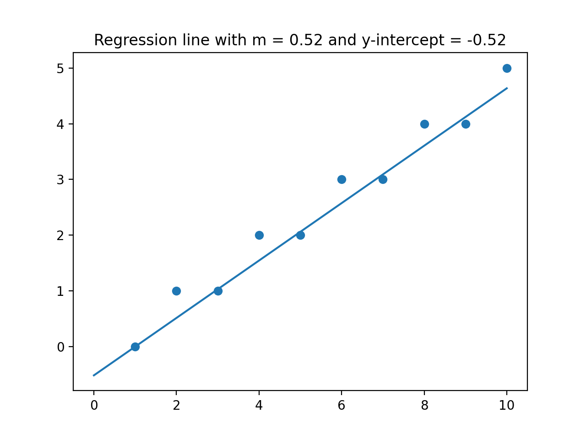
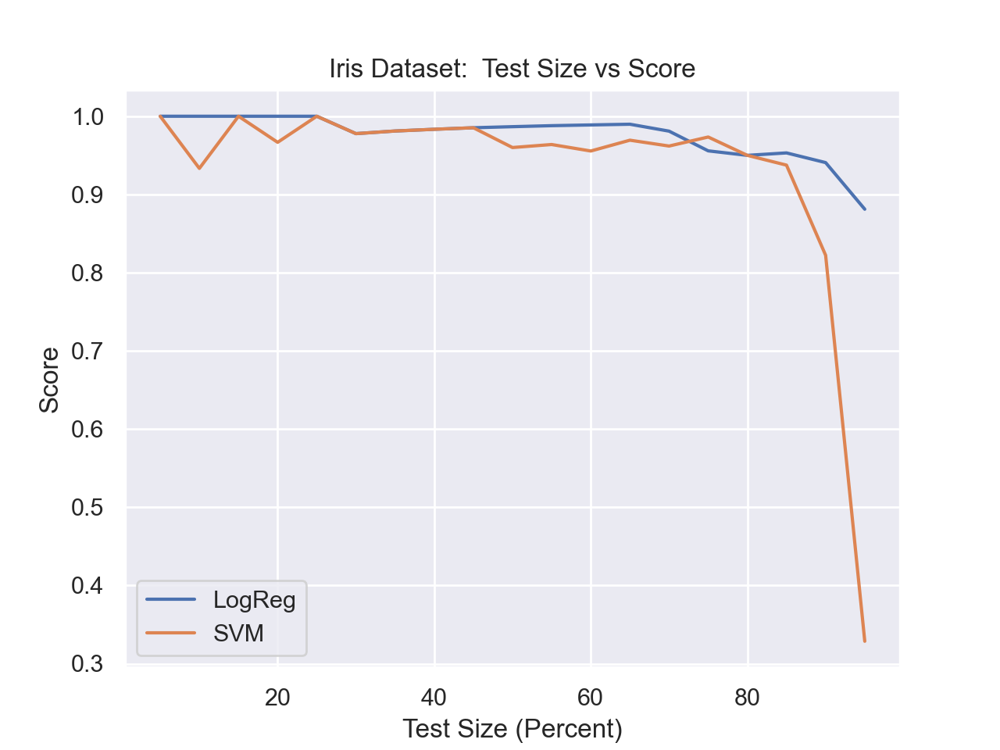
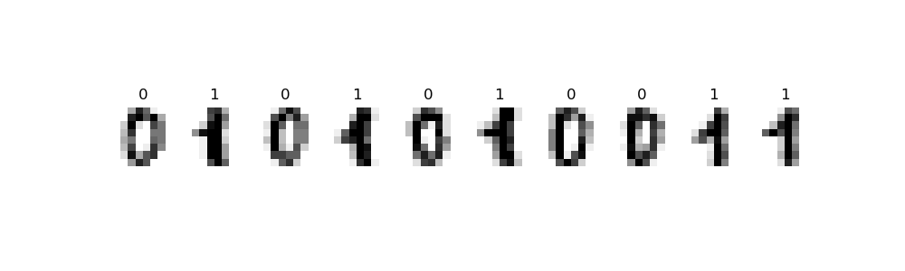
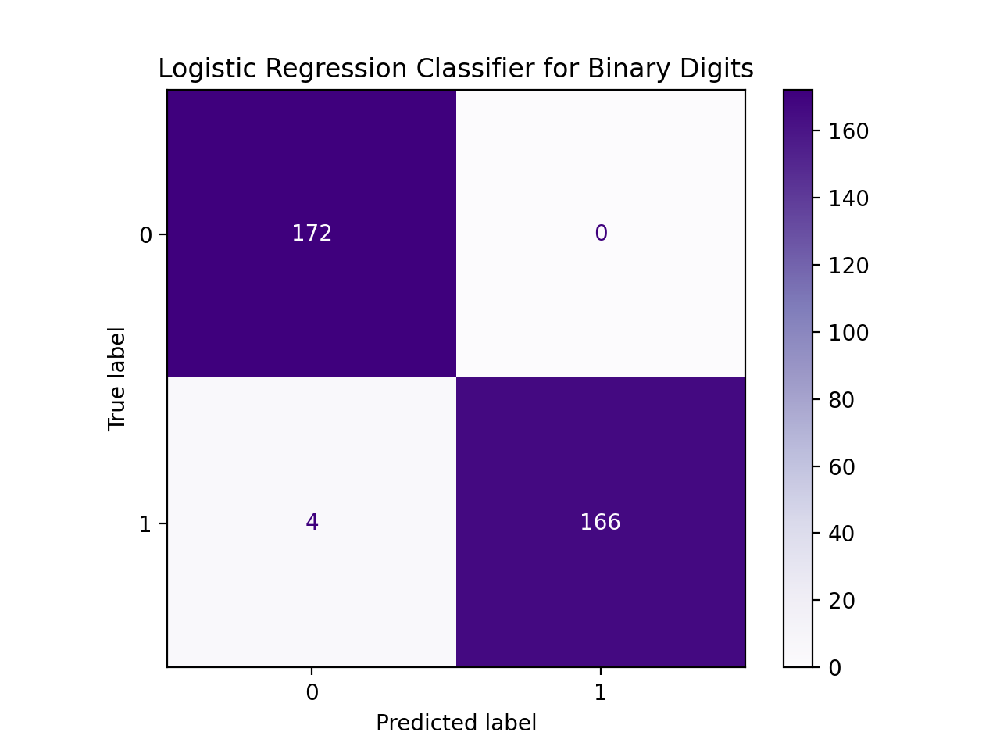

Coursework
CSci 39542: Introduction to Data Science
Department of Computer Science
Hunter College, City University of New York
Fall 2021
Quizzes Homework Project
Quizzes
Unless otherwise noted, quizzes are available on Blackboard for the 24 hours after lecture. Blackboard quizzes are 15 minutes long and can be repeated up to the deadline. The highest score earned on a Blackboard quiz will be reported. Blackboard access is generated automatically from the registrar. See the ICIT Blackboard page for resources and tutorials for using the system.Five of the quizzes assess your programming skill using HackerRank. These quizzes are 30 minutes long and cannot be repeated. Links will be available on Blackboard to access the quiz.
There are no make-up quizzes. Instead, your score on the final exam will replace missing quiz grades (the final exam will also replace a quiz grade when you take the quiz but do better on the final exam). See the syllabus for additional information on how grades are calculated.
Quiz 1: Due 4pm, Friday, 27 August. The first quiz asks that you confirm that you have read the Hunter College's Academic Integrity Policy:
Hunter College regards acts of academic dishonesty (e.g., plagiarism, cheating on examinations, obtaining unfair advantage, and falsification of records and official documents) as serious offenses against the values of intellectual honesty. The College is committed to enforcing the CUNY Policy on Academic Integrity and will pursue cases of academic dishonesty according to the Hunter College Academic Integrity Procedures.
Quiz 3: Due 4pm, Friday, 3 September. The quiz covers data sampling from the third lecture and the reading: DS 100: Chapter 2 (Theory for Data Design) and includes Python review questions.
Quiz 4: Due 4pm, Friday, 10 September. The quiz covers Python string methods and Python data types from the second and third lectures and the reading: DS 100: Section 13.1 (Python String Methods) and subsetting dataframes from DS 100: Chapter 7 (Data Tables in Python).
Quiz 5: Due 4pm, Tuesday, 14 September.
This is a coding quiz on HackerRank focusing on the Python constructs and package from the first two weeks. You will be sent an invitation to the email you use for Gradescope for this quiz. You have 30 minutes to complete the quiz, and the quiz cannot be repeated.
Quiz 6: Due 4pm, Tuesday, 21 September.
Today's topic is regular expressions from Lecture #3 and DS 100: Sections 13.2-13.3 (Regular Expressions). Quiz 7: Due 4pm, Friday, 24 September.
This quiz covers SQL from Lectures #4, 5 & 6 and DS 100: Chapter 7 (Relational Databases & SQL). Quiz 8: Due 4pm, Tuesday, 28 September.
This quiz covers DataFrames from Pandas, covered in Lectures #4, 5 & 6 and DS 100: Chapter 6 (Data Tables in Python). Quiz 11: Due 4pm, Friday, 8 October.
The focus in on data visualiation as discussed in Lectures #7, #8 and #9 and DS 100: Chapter 11 (Data Visualization). Quiz 12: Due 4pm, Friday, 15 October.
The quiz covers loss functions, correlation, and regression from Lectures #10, #11 & #12 and the reading: DS 100, Sections 4.2-4.4 (Loss Functions).
Quiz 13: Due 4pm, Tuesday, 19 October.
The focus of this quiz is sampling distributions and the Central Limit Theorem, covered in Lectures #11-12,
DS 8: Chapter 9 (Randomness), and
DS 100: Chapter 16 (Probability & Generalization).
Quiz 14: Due 4pm, Friday, 22 October.
The quiz covers linear models, ordinary least squares, and gradient descent from Lectures #11-13 and the reading: DS 100: Chapter 17 (Gradient Descent).
Quiz 16: Due 4pm, Friday, 29 October.
The quiz reviews topics from the first 15 lectures.
Quiz 17: Due 4pm, Tuesday, 2 November.
The quiz covers the feature engineering from Lectures #15-16 and the reading: DS 100: Chapter 20 (Feature Engineering).
Quiz 18: Due 4pm, Friday, 5 November.
The quiz covers the logistic model from Lectures #17-18 and the reading: DS 100: Chapter 20 (Classification).
Quiz 19: Due 4pm, Tuesday, 9 November.
The quiz covers the logistic regression from Lectures #17-19 and the reading: DS 100: Chapter 20 (Classification).
Quiz 20: Due 4pm, Friday, 12 November.
This is a coding quiz on HackerRank. A link to access the quiz is available on Blackboard 24 hours before the due date. You have 30 minutes to complete the quiz, and the quiz cannot be repeated. You have 30 minutes to complete the quiz, and the quiz cannot be repeated.
Quiz 21: Due 4pm, Tuesday, 16 November.
The quiz covers classification from Lectures #17-21 and the reading: DS 100: Chapter 20 (Classification) and Python DS Handbook Chapter 5 (SVMs).
Quiz 22: Due 4pm, Friday, 19 November.
The quiz covers the linear algebra review from Lecture #21.
Quiz 23: Due 4pm, Tuesday, 23 October.
Quiz 24: Due 4pm, Tuesday, 30 November.
The quiz covers multidimensional scaling and dimensionality reduction from Lectures #22-23 and the reading: Manifold Learning (sklearn).
The quiz focuses on Principal Components Analysis from Lectures #21-23 and the reading: Python Data Science Handbook: Section 5.9 (PCA). Since we did not cover all the material yet, this quiz will now be review topics from Lectures 1-20.
Quiz 27: Due 4pm, Friday, 9 December. The quiz reviews topics from the first 26 lectures.
Quiz 28: Due 4pm, Tuesday, 14 December. The last quiz is an end of the semester survey.
Homework
Unless otherwise noted, programs are submitted on the course's Gradescope site and are written in Python. Also, to receive full credit, the code should be compatible with Python 3.6 (the default for the Gradescope autograders).All students registered by Monday, 23 August were sent a registration invitation to the email on record on their Blackboard account. If you did not receive the email or would like to use a different account, post to Help::Individual Questions (on the left hand menu when logged into the course site on Blackboard). Include in your post that you not receive a Gradescope invitation, your preferred email, and we will manually generate an invitation. As a default, we use your name as it appears in Blackboard/CUNYFirst (to update CUNYFirst, see changing your personal information). If you prefer a different name for Gradescope, include it in your post, and we will update the Gradescope registration.
To get full credit for a program, the file must include in the opening comment:
- Your name, as it appears in your Gradescope registration.
- The email you are using for Gradescope.
- A list of any resources you used for the program. Include classmates and tutors that you worked with, along with any websites or tutorials that you used. If you used no resources (other than the class notes and textbooks), then you should include the line: "No resources used."
"""
Name: Thomas Hunter
Email: thomas.hunter.1870@hunter.cuny.edu
Resources: Used python.org as a reminder of Python 3 print statements.
"""
Set 1: The first set of programs recaps familiar Python constructs and packages. None are challenging, instead, their purpose is as review and to ensure your Python IDE is functional, has the basic libraries and that you can submit programs to Gradescope.
Program 1: Hello, world. Due noon, Friday, 27 August.
Submit a Python program that prints: Program 2: Senators' Names. Due noon, Monday, 30 August.
Write a program, using the For example, if the file was legislators-current.csv with the first 3 lines of:
Write a program that asks the user for the name of an input CSV file and the name of an output CSV file. The program should open the file name provided by the user. Next, the program should select rows where the field For example, if the file was legislators-current.csv with the first 3 lines of:
Note: if you use the legislators CSV file above, your output file should have 101 lines: 1 line of header information and 100 rows of data.
Program 4: ELA Proficiency. Due noon, Thursday, 2 September.
Write a program that asks the user for the name of an input CSV file and the name of an output CSV file. The program should open the file name provided by the user.
Next, the program should select rows where the field
Then a sample run of the program:
Program 5: URL Collection. Due noon, Friday, 3 September.
Write a program that asks the user for the name of an input HTML file and the name of an output CSV file. Your program should use regular expressions (see Chapter 12.4 for using the For example, if the input file is:
Program 6: Regex on Restaurant Inspection Data. Due noon, Thursday, 9 September.
Use regular expressions (covered in Lecture 3 & DS 100: Sections 12.2-3) to clean restaurant inspection datasets that we will use in later SQL programs.
Your program should:
For example, if the file was restaurants30July.csv with the first 3 lines of:
Program 7: Neighborhood Tabulation Areas Due noon, Friday, 10 September.
The package pandasql provides an easy way to use SQL queries directly on a Pandas DataFrame. (You may need to install it in your hierarchy (e.g.
Once installed, you can run queries via the function For this program, ask the user for the input and output file names.
You should assume that the input file contains the New York City
Neighborhood Tabulation Areas such as
nynta.csv.
Use Program 8: Restaurant SQL Queries. Due noon, Monday, 13 September.
Your program should ask for the input file name (must include .csv) and then for an output file prefix (must not include any extension). For example, with
Using SQL (see DS 100: Section 6.2), extract the following information from a restaurant inspection dataset (a small file of inspections from 30 July is available: restaurants30July.csv):
Note: The file extension names are case-sensitive, so, the autograder will not except Program 9: Aggregating Restaurant Data (SQL).
Due noon, Tuesday, 14 September.
Using the more advanced SQL commands from DS 100: Section 5.1 (e.g. Your program should ask for the input file name (must include .csv) and then for an output file prefix (must not include any extension).
For example, if you entered The file The file The file Program 11: Joining Restaurant & NTA Data. Due noon, Tuesday, 21 September.
For testing, a small file of inspections from 30 July is available: restaurants30July.csv and the Neighborhood Tabulation Areas (NTA):
nta.csv.
Your program should ask for two input file name (must include .csv) and then for an output file prefix (must not include any extension). For example, with
Program 12: MTA Ridership. Due noon, Thursday, 23 September.
In the next lecture, we will be summarizing time-series data and using a
cleaned version of MTA subway and bus ridership, inspired by Oldenburg's NYC Transit Turnstile Data.
Write a program that asks the user for the name of an input CSV file and the name of an output CSV file. The program should open the file name provided by the user, which you can assume will include the column names:
For example, if the file was the 2020 data for Staten Island, rmta_trunc_staten_island.csv with the first 3 lines of:
Program 14: Library Cleaning. Due noon, Monday, 27 September.
Write two functions that will be used to clean the OpenData NYC dataset of Libraries in New York City (downloaded as CSV file). The first three lines of the CSV file look like:
Note: you should submit a file with only the standard comments at the top, and these two functions. The grading scripts will then import the file for testing. A sample test program that assumes your program is called Program 15: Plotting Challenge. Due noon, Tuesday, 28 September.
The goal is to create a plot of NYC OpenData Motor Vehicle Collisions that follows this style. For example, here is the plot for January 2020 dataset:
Your program should begin by asking the user for input and output files. It should be written to take any dataset from the NYC OpenData Motor Vehicle Collisions and produce an image that matches this style. The resulting image should be saved to the output file specified by the user.
Hint: to transform the data into separate columns (i.e. "unstack"/pivot the groups to be columns) for the daily number of collisions for each borough:
Program 16: Choropleth Attendance Cleaning. Due noon, Thursday, 30 September.
In lecture, we wrote a program, schoolsChoropleth.py, using the school district files used in Programs 10 & 11 to make a choropleth map of top English Languange Arts scores, by district, in New York City:
For this program, write a program that will clean district school attendance data so that we can use the same visualization to see attendance for different districts.
Your stand-alone program should ask the user for the input file name, the output file name, as well as the grade and school year to use as filters. For example,
a sample run of the program on public-district-attendance-results-2014-2019.csv:
Hints:
Program 17: Grouping ELA/Math by Districts. Due noon, Friday, 1 October.
Your program should build on the classwork from Lectures #6 and #9 to build a pivot table, grouped by district and test subject, of the percentage of students that are proficient in each (i.e. score 3 or 4 on the exam). Your program should ask the user for two input CSV files and print a pivot table.
Hints:
Program 18: Log Scale. Due noon, Monday, 4 October.
In Lecture #9 and Section 11.5, we used log scale to visualize data. Since the logarithm function is not defined on non-positive data, we are first going to write a function that removes any tuple that has a 0 or negative value. Our second function transformed the cleaned data to its log values.
Write two functions that to be used to display data on a log-scale. Each function takes and returns two iterables of numeric values (e.g. a Series, np.array, or list restricted to numeric values).
Each function takes as input a row of the table:
For example, if
Note: you should submit a file with only the standard comments at the top, and these two functions. The grading scripts will then import the file for testing. A sample test program that assumes your program is called
Program 19: Smoothing with Gaussians. Due noon, Tuesday, 5 October.
In Lecture #9 and Section 11.5, we used smoothing to visualize data. For this program, write a function that takes two arguments, an Numpy array of x-axis coordinates, and a list of numeric values, and returns the corresponding y-values for the sum of the gaussian probability distribution functions (pdf's) for each point in the list.
For example, calling the function:
since there is only one point given (namely 5), the returned value is the probability density function centered at 5 (with For example, calling the function:
since the there are 10 points given, the function computes the probability density function centered at each of the points, across all the values in
Note: you should submit a file with only the standard comments at the top, and this function. The grading scripts will then import the file for testing.
Hint: Include only the function you need (such as Program 20: Loss Functions for Tips. Due noon, Thursday, 7 October.
Using the functions mean squared loss function For example, calling the function:
For example, calling the function:
Note: you should submit a file with only the standard comments at the top, and this function. The grading scripts will then import the file for testing.
Hint: Include only the libraries you need (such as Program 21: Taxi Cleaning. Due noon, Friday, 8 October.
Write a program, tailored to the NYC OpenData Yellow Taxi Trip Data, that asks the user for the name of an input CSV file and the name of an output CSV file. The program should open the file name provided by the user. Next, the program should copy the input file and create two new columns: For example, if the file, taxi_new_years_day_2020.csv, was the first of January 2020 entries downloaded from 2020 Yellow Taxi Trip Data (about 170,000 entries) with the first 3 lines of:
You should round the values stored in your new columns to the nearest tenth and save your CSV file without the indexing (i.e. Program 22: Dice Simulator. Due noon, Thursday, 14 October.
Write a function:
Since the numbers are chosen at random, the fractions will differ some from run to run. One run of the function
Note: you should submit a file with only the standard comments at the top and the function. The grading scripts will then import the file for testing.
Note: you should submit a file with only the standard comments at the top, this function, and any helper functions you have written. The grading scripts will then import your file for testing. Program 24: Enrollments. Due noon, Monday, 18 October.
Write a function,
For example, assuming your function The resulting DataFrame has only 5 students, since the student, Dara, has fewer than 3 current courses and that row is dropped.
Note: you should submit a file with only the standard comments at the top, this function, and any helper functions you have written. The grading scripts will then import the file for testing. Hints:
Program 25: PMF of Senators' Ages. Due noon, Tuesday, 19 October.
Section 16.1 (Random Variables) of the textbook has a small example of computing the probability mass function of a data set of ages was computed by hand. Write a function that will automate this process:
For example, calling the function on the example from the textbook:
For example, calling the function on the senators' ages from Program 3:
Note: you should submit a file with only the standard comments at the top, this function, and any helper functions you have written. The grading scripts will then import the file for testing.
Hint: Include only the libraries you need (such as Program 26: Weekday Entries. Due noon, Thursday, 21 October.
Use the date time functionality of Pandas to write the following functions:
For example, using the Seaborn's Green Taxi Data Set and assuming your functions are in the Using the function our second function:
Note: you should submit a file with only the standard comments at the top, this function, and any helper functions you have written. The grading scripts will then import the file for testing. Program 27: Fitting OLS. Due noon, Friday, 22 October.
Write a function, For example, calling the function on the example from the textbook:

For example, calling the function on the senators' ages from Program 3:
Note: you should submit a file with only the standard comments at the top, this function, and any helper functions you have written. The grading scripts will then import the file for testing.
Hint: Include only the libraries you need (such as Note: you should submit a file with only the standard comments at the top, this function, and any helper functions you have written. The grading scripts will then import the file for testing. Program 28: CS Courses. Due noon, Monday, 25 October.
In Program 24, we wrote a function that counted courses that students are currently taking. For this program,
write a function that takes a DataFrame and returns a sorted list of the computer science courses taken. Each course should occur once in the list, no matter how often it occurs in the list of courses taken by the students
For example, assuming your function Note: you should submit a file with only the standard comments at the top, this function, and any helper functions you have written. The grading scripts will then import the file for testing. Hints:
Program 29: Predictions with MLM's. Due noon, Tuesday, 26 October.
Write a program that asks the user for the following inputs:
Use the To predict, using this model:
A sample run of your program would look like:
Note: your program should ask separately ask for input 6 times, in the order listed above. Changing the order or combining the inputs into fewer lines will cause the autograder to crash.
Write a function that computes the range of values a column takes (i.e. the difference
between the maximum and minimum values). The column contains
numeric values, unless the flag
For example, assuming your function Using the function on the 10 lines of seaborn taxis dataset:
Note: you should submit a file with only the standard comments at the top, this function, and any helper functions you have written. The grading scripts will then import the file for testing. Hint: See
Pandas' datetime overview.
A useful function is
In Lecture #13, we introduced the
For example, assuming your function
Continuing the example:
Note: you should submit a file with only the standard comments at the top, this function, and any helper functions you have written. The grading scripts will then import the file for testing. Program 32: Attendance. Due noon, Monday, 1 November.
In Lectures #14 and #15, we discussed the hypothesis that NYC public schools have lower attendance on Fridays. For this program, write a function that takes a DataFrame of school attendance records (following the format from NYC OpenData) and returns the correlation coefficent between the day of the week and daily attendance (computed as a percentage of students present of those enrolled at the school).
For example, assuming your function
Note: you should submit a file with only the standard comments at the top, this function, and any helper functions you have written. The grading scripts will then import the file for testing.
Hints:
Program 33: Confidence Intervals. Due noon, Tuesday, 2 November.
In Lecture #13, we discussed the UBC confidence interval demo, where a normal distribution (of length of fish) was repeated sampled. For each sample, the confidence interval of the sample mean was computed and stored. And, for each sample, it was checked if the true mean of the distribution was contained in the confidence interval of the sample mean:
For this program, echo the UBC confidence interval demo. Write a function
that computes the confidence intervals and tabulates the running successes of the confidence interval of the sample mean capturing the true mean of the population:
For example, assuming your function
Another possible run, where we plot the values to see the results better:
Note: you should submit a file with only the standard comments at the top, this function, and any helper functions you have written. The grading scripts will then import the file for testing.
Hints:
Program 34: Polynomial Features. Due noon, Thursday, 4 November.
Following the textbook code demostration in Lecture 16, write a function that takes values of an independent variable and corresponding values of a dependent varaible, and fits polynomial regression models of increasing degree until the MSE falls below error.
For example, assuming your function
Continuing the example, if we lower the threshold,
If we lower the threshold to the default (0.01),
Note: you should submit a file with only the standard comments at the top, this function, and any helper functions you have written. The grading scripts will then import the file for testing. Recent news articles focused on the significantly higher percentage of parking tickets that are unpaid for cars with out-of-state plates:
The data is aggregated across the whole city, what happens when focused on individual neighborhoods? Similarly, a high fraction of motor vehicle collisions involve cars registered out-of-state (see crash analysis by Streetsblog NYC). How does that affect your neighborhood?
Write a function that will takes a DataFrame and column and returns a new DataFrame with a column that is 1 if the column contains the indicator or 0 otherwise. Your function should allow the new column name and indicator value to be customized in the parameter list. The default values are
For example, assuming your function
Note: you should submit a file with only the standard comments at the top, this
function, and any helper functions you have written. The grading scripts will then import the file for testing.
The OpenData NYC Open Restaurant Applications dataset of applications from food service establishments seeking authorization to place outdoor seating in front of their business on the sidewalk, roadway, or both. Some establishments are listed multiple times since they have multiple locations. Others have duplicate listings for the same location due submitting multiple times or for different kinds of permits (use of sidewalk, use of roadway, etc.)
Write a program that takes a DataFrame of restaurants and returns a DataFrame with each Restaurant occurring exactly once and two new columns:
For example, assuming your function would print in:
Note: you should submit a file with only the standard comments at the top, this function, and any helper functions you have written. The grading scripts will then import the file for testing.
Hints:
In Chapter 24 and Lectures #17 and #18, we worked through a logistic model to predict scoring attempts based on a single independent variable For this program, write a function that identifies which variable increases the accuracy of the oringal model the most.
For example, assuming your function Another example with the same DataFrame:
Note: you should submit a file with only the standard comments at the top, this function, and any helper functions you have written. The grading scripts will then import the file for testing. Hints:
As a first step, we will group by licence plate number and aggregate the state, vehicle type and color by choosing the first item stored for each:
While this works well for And for the Precinct District 19 dataset that contains almost a half million tickets:
To clean the data, write two functions that can be applied to the DataFrame:
After applying these functions, the resulting DataFrame can then be used to build a classifer on how likely a particular car is to be one that has more than a ticket a day (see Program 42).
Note: you should submit a file with only the standard comments at the top, this function, and any helper functions you have written. The grading scripts will then import the file for testing.
This program uses the canonical MNIST dataset of hand-written digits discussed in Lecture #19 and available in sklearn digits dataset:
Write a function that builds a logistic regression model that classifies binary digits:
For example, let's flatten the entries and restrict the dataset to just binary digits, as we did in lecture:
We can then use the restricted data and targets datasets as input to our function, assuming your function Another example with the same data, but different size for the data reserved for testing:
Note: you should submit a file with only the standard comments at the top, this function, and any helper functions you have written. The grading scripts will then import the file for testing. For example, assuming your function Note: you should submit a file with only the standard comments at the top, this function, and any helper functions you have written. The grading scripts will then import the file for testing. Hints:
In DS 100: Chapter 24, the confusion matrix computed for the iris dataset was:
For example, examining a confusion matrix for the MNIST digits dataset and assuming would display:
For this program, we will train a linear regression classifier to predict the number of tickets a vehicle is likely to receive. The data is first cleaned using the functions you wrote in Program 38 to use standardized spellings of color names as well as one of three vehicle classes. The first function adds indicators for the specified categorical featuers. The second function trains a linear regression classifier on the data and returns the accuracy (score) of your classifier on the test data, as well as the classifier.
For example, let's clean the dataset using the functions from Program 38, as we did in lecture on Parking_Q1_2021_Lexington.csv:
We can then use the cleaned data, assuming your functions are in the We can then use this in the second function to fit a classifier that will predict tickets based on characteristics of the vehicle:
Note: you should submit a file with only the standard comments at the top, this function, and any helper functions you have written. The grading scripts will then import the file for testing.
In Lecture #21 and Explained Visually, we reviewed matrices, eigenvectors and eigenvalues.
For this program, write a function that extends the moving between information about any number of states, starting populations, and the number of years, and returns an array of the ending population of each state.
For example, if you have that people move from the following three states with the probabilities of moving each year:
Similarly, the population after 2 years, can be found by multiplying the population after 1 year by the transition matrix. More generally, the population after k+1 years can be found by multiplying the populations at year k by the transition matrix.
The steady state population can be found by first finding the eigenvector corresponding to the maximal eigenvalue of 1, scaling it so its entries sum to 1 (i.e. divide through by its sum) to get percentages. And then, multiplying the percentages by the total population.
For example, continuing from above, and assuming your functions are in Note: you should submit a file with only the standard comments at the top, this function, and any helper functions you have written. The grading scripts will then import the file for testing. For example, assuming your functions are in

Note: you should submit a file with only the standard comments at the top, this function, and any helper functions you have written. The grading scripts will then import the file for testing.
In Lecture 22 and (also in Chapter 25), we used scree plots to provide a visualization of the captured variance. This assignment asks you to implement two other popular ways of determining the number of dimensions to retain.
For the second function, again using the example from the textbook, for the array
Note: you should submit a file with only the standard comments at the top, and these two functions. The grading scripts will then import the file for testing.
In Lecture #21, we introduced Principal Components Analysis and the number of components needed to capture the intrinistic dimension of the data set. For this program, write a function that allows the user to explore how many dimensions are needed to see the underlying structure of images from the sklearn digits dataset (inspired by Python Data Science Handbook: Section 5.9 (PCA)).
Write a function that approximates an image by summing up a fixed number of its components:
If we let
In a similar fashion, we can represent the image in terms of the axis,
For example, assuming the function is in
Note: you should submit a file with only the standard comments at the top, this function, and any helper functions you have written. The grading scripts will then import the file for testing.
In Lecture #22 and DS 100, Chapter 26.3, we explored Principal Components Analysis (PCA) for a US Representatives voting dataset. For this program, we will examine the dataset with Multidimensional Scaling (MDS)
for different distance matrices. There are two functions to write:
For example, assuming your functions are in would display:
The above runs used the files from the textbook:
vote_pivot.csv and
legislators.csv.
Note: you should submit a file with only the standard comments at the top, this function, and any helper functions you have written. The grading scripts will then import the file for testing. This program focuses on travel times in NYC and how well they estimate the aerial (Euclidean) distance between points. To compare various measures of distances, we need several functions:
Using Google Maps API, we generated the amount of time it would take to travel between the following landmarks:
Each file has the entries listed in hours and minutes. The first function extracts the time from each and returns a matrix of numeric values representing total minutes for each entry.
For example, assuming your functions are in Note: you should submit a file with only the standard comments at the top, this function, and any helper functions you have written. The grading scripts will then import the file for testing.
In Lecture #25 and Python Data Science Handbook: Section 5.11, we clustered the digits data set using K-means clustering and used t-SNE to improve accuracy. The digits data set is one of 7 toy datasets included in sklearn that can be quickly loaded to try different algorithms.
For this program, modify the code from lecture to write a function that allows you to run three different preprocessing of a toy dataset ("none", "TSNE", or "MDS"), applies K-Means clustering, takes the mode of each cluster as the predicted label, and then returns the accuracy of the prediction.
For example, assuming your functions are in We can also run on the digits dataset. It's larger and the t-SNE and MDS methods will take a bit of time to return their answers:
Note: you should submit a file with only the standard comments at the top, this function, and any helper functions you have written. The grading scripts will then import the file for testing. Hints:
In Lecture #25 and Python Data Science Handbook: Section 5.11, we used K-Means clustering to display an image using 16 colors. The color values of the image were treated as 3D vectors, and the chosen colors were the centers of the clusters of those values. For this program, write a function that takes an image and the number of clusters and returns the image recolored with cluster centers.
For example, assuming your functions are in
We can also run it on hunterFlag.jpg (since it's a larger file it will take a bit longer to run):
Note: you should submit a file with only the standard comments at the top, this function, and any helper functions you have written. The grading scripts will then import the file for testing.
The required final project synthesizes the skills acquired in the course to analyze and visualize data on a topic of your choosing. It is your chance to demonstrate what you have learned, your creativity, and a project that you are passionate about. The intended audience for your project is your classmates as well as tech recruiters and potential employers.
(Learning Objective: students are able to use a Python IDE on their computer and successfully submit the work to the Gradescope system.)
Hello, world
(Learning Objective: students can successfully read and write CSV files and use the Pandas package to select rows, filtered by boolean expressions.)
pandas package, that asks the user for the name of an input CSV file and the name of an output CSV file. The program should open the file name provided by the user.
Next, the program should select rows where the field senate_class is non-empty and write the first_name and last_name to a file with the output file name provided by the user.
Then a sample run of the program:
last_name,first_name,middle_name,suffix,nickname,full_name,birthday,gender,type,state,district,senate_class,party,url,address,phone,contact_form,rss_url,twitter,facebook,youtube,youtube_id,bioguide_id,thomas_id,opensecrets_id,lis_id,fec_ids,cspan_id,govtrack_id,votesmart_id,ballotpedia_id,washington_post_id,icpsr_id,wikipedia_id
Brown,Sherrod,,,,Sherrod Brown,1952-11-09,M,sen,OH,,1,Democrat,https://www.brown.senate.gov,503 Hart Senate Office Building Washington DC 20510,202-224-2315,http://www.brown.senate.gov/contact/,http://www.brown.senate.gov/rss/feeds/?type=all&,SenSherrodBrown,SenatorSherrodBrown,SherrodBrownOhio,UCgy8jfERh-t_ixkKKoCmglQ,B000944,00136,N00003535,S307,"H2OH13033,S6OH00163",5051,400050,27018,Sherrod Brown,,29389,Sherrod Brown
Cantwell,Maria,,,,Maria Cantwell,1958-10-13,F,sen,WA,,1,Democrat,https://www.cantwell.senate.gov,511 Hart Senate Office Building Washington DC 20510,202-224-3441,http://www.cantwell.senate.gov/public/index.cfm/email-maria,http://www.cantwell.senate.gov/public/index.cfm/rss/feed,SenatorCantwell,senatorcantwell,SenatorCantwell,UCN52UDqKgvHRk39ncySrIMw,C000127,00172,N00007836,S275,"S8WA00194,H2WA01054",26137,300018,27122,Maria Cantwell,,39310,Maria Cantwell
And the first three lines of Enter input file name: legislators-current.csv
Enter output file name: senatorNames.csv
senatorNames.csv would be:
Note: if you use the legislators CSV file above, your output file should have 101 lines: 1 line of header information and 100 rows of data.
first_name,last_name
Sherrod,Brown
Maria,Cantwell
senate_class is non-empty and write the first_name and compute the age based on the birthday field as of the first of the year. Your program should write out a new CSV file (with the name provided by the user) with the two columns: first_name and age.
Then a sample run of the program:
last_name,first_name,middle_name,suffix,nickname,full_name,birthday,gender,type,state,district,senate_class,party,url,address,phone,contact_form,rss_url,twitter,facebook,youtube,youtube_id,bioguide_id,thomas_id,opensecrets_id,lis_id,fec_ids,cspan_id,govtrack_id,votesmart_id,ballotpedia_id,washington_post_id,icpsr_id,wikipedia_id
Brown,Sherrod,,,,Sherrod Brown,1952-11-09,M,sen,OH,,1,Democrat,https://www.brown.senate.gov,503 Hart Senate Office Building Washington DC 20510,202-224-2315,http://www.brown.senate.gov/contact/,http://www.brown.senate.gov/rss/feeds/?type=all&,SenSherrodBrown,SenatorSherrodBrown,SherrodBrownOhio,UCgy8jfERh-t_ixkKKoCmglQ,B000944,00136,N00003535,S307,"H2OH13033,S6OH00163",5051,400050,27018,Sherrod Brown,,29389,Sherrod Brown
Cantwell,Maria,,,,Maria Cantwell,1958-10-13,F,sen,WA,,1,Democrat,https://www.cantwell.senate.gov,511 Hart Senate Office Building Washington DC 20510,202-224-3441,http://www.cantwell.senate.gov/public/index.cfm/email-maria,http://www.cantwell.senate.gov/public/index.cfm/rss/feed,SenatorCantwell,senatorcantwell,SenatorCantwell,UCN52UDqKgvHRk39ncySrIMw,C000127,00172,N00007836,S275,"S8WA00194,H2WA01054",26137,300018,27122,Maria Cantwell,,39310,Maria Cantwell
And the first three lines of Enter input file name: legislators-current.csv
Enter output file name: senatorAge.csv
senatorAge.csv would be:
since that was their ages as of the start of the year: January 1, 2021.
first_name,age
Sherrod,68
Maria,62
(Learning Objective: students can successfully filter formatted data using standard Pandas operations for selecting data.)
Grade is equal to 3 and the Year is equal to 2019 and write all rows that match that criteria to a new CSV file.
where the file Enter input file name: school-ela-results-2013-2019.csv
Enter output file name: ela2013.csv
school-ela-results-2013-2019.csv is extracted from NYC Schools Test Results (and truncated version of roughly the first 1000 lines for testing). The first lines of the output file would be:
School,Name,Grade,Year,Category,Number Tested,Mean Scale Score,# Level 1,% Level 1,# Level 2,% Level 2,# Level 3,% Level 3,# Level 4,% Level 4,# Level 3+4,% Level 3+4
01M015,P.S. 015 ROBERTO CLEMENTE,3,2019,All Students,27,606,1,3.7,7,25.9,18,66.7,1,3.7,19,70.4
01M019, P.S. 019 ASHER LEVY,3,2019,All Students,24,606,0,0.0,8,33.3,15,62.5,1,4.2,16,66.7
01M020,P.S. 020 ANNA SILVER,3,2019,All Students,57,593,13,22.8,24,42.1,18,31.6,2,3.5,20,35.1
Set 2: The second set of programs focuses on incorporating and analyzing rectangular data, in terms of relational databases and data frames. The goal is familiarity with these canonical representations to use as building blocks for future analysis, programs, and your project.
(Learning Objective: to use regular expressions with simple patterns to filter column data in a canonical example: scraping a website of URL's.)
re package in Python) to find all links in the input file and store the link text and URL as columns: Title and URL in the CSV file specified by the user. For the URL, strip off the leading https:// or http:// and any trailing slashes (/):
Then a sample run of the program:
<html>
<head><title>Simple HTML File</title></head>
<body>
<p> Here's a link for <a href="http://www.hunter.cuny.edu/csci">Hunter CS Department</a>
and for <a href="https://stjohn.github.io/teaching/data/fall21/index.html">CSci 39542</a>. </p>
<p> And for <a href="https://www.google.com/">google</a>
</body>
</html>
And the Enter input file name: simple.html
Enter output file name: links.csv
links.csv would be:
Title,URL
Hunter CS Department,www.hunter.cuny.edu/csci
CSci 39542,stjohn.github.io/teaching/data/fall21/index.html
google,www.google.com
(Learning Objective: The two learning objectives of this exercise are a) to give the students an opportunity to practice their newfound regular expressions (regex) skills and b) familiarize them with the restaurant inspection dataset which would be used again in the latter SQL programs.)
2125551212, some entries have extra characters and not enough digits, e.g. 212-555-12. First, use regex to check that 10 digits were entered. If not, set the value to "" (empty string) since the current data is corrupt. If the phone number does have 10 digits, use regex to parse out the given 10 digit phone number DDDDDDDDDD and re-concatenate it back into a 11 digit format: 1-digit country code (as 1), 3-digit area code, and a 7-digit telephone number, so that the final output looks like: +1-DDD-DDD-DDDDD.
MM/DD/YYYY to YYYY/MM/DD.
DBA, please create a new column called "restaurant_name" which reformats the data in the original column from all upper case to camel case. Separately, create a new Boolean column that flags True if the word Thai (not case sensitive) appears in the original restaurant name.
Then a sample run of the program:
CAMIS,DBA,BORO,BUILDING,STREET,ZIPCODE,PHONE,CUISINE DESCRIPTION,INSPECTION DATE,ACTION,VIOLATION CODE,VIOLATION DESCRIPTION,CRITICAL FLAG,SCORE,GRADE,GRADE DATE,RECORD DATE,INSPECTION TYPE,Latitude,Longitude,Community Board,Council District,Census Tract,BIN,BBL,NTA
41178124,CAFE 57,Manhattan,300,WEST 57 STREET,10019,2126492729,American,7/30/2021,Violations were cited in the following area(s).,09C,Food contact surface not properly maintained.,Not Critical,4,A,7/30/2021,8/1/2021,Cycle Inspection / Initial Inspection,40.76643902,-73.98332508,104,3,13900,1025451,1010477502,MN15
50111450,CASTLE CHICKEN,Bronx,5987A,BROADWAY,10471,9178562047,Chicken,7/30/2021,Violations were cited in the following area(s).,05D,Hand washing facility not provided in or near food preparation area and toilet room. Hot and cold running water at adequate pressure to enable cleanliness of employees not provided at facility. Soap and an acceptable hand-drying device not provided.,Critical,41,N,,8/1/2021,Pre-permit (Operational) / Initial Inspection,40.88993027,-73.89805316,208,11,28500,2084208,2058011033,BX29
40699339,NICK GARDEN COFFEE SHOP,Bronx,2953,WEBSTER AVENUE,10458,7183652277,Coffee/Tea,7/30/2021,Violations were cited in the following area(s).,08A,Facility not vermin proof. Harborage or conditions conducive to attracting vermin to the premises and/or allowing vermin to exist.,Not Critical,31,,,8/1/2021,Cycle Inspection / Initial Inspection,40.86759042,-73.88308647,207,11,41500,2016446,2032800061,BX05
And the first three lines of
Enter input file name: restaurants30July.csv
Enter output file name: july30filtered.csv
july30filtered.csv would be:
CAMIS,DBA,BORO,BUILDING,STREET,ZIPCODE,PHONE,CUISINE DESCRIPTION,INSPECTION DATE,ACTION,VIOLATION CODE,VIOLATION DESCRIPTION,CRITICAL FLAG,SCORE,GRADE,GRADE DATE,RECORD DATE,INSPECTION TYPE,Latitude,Longitude,Community Board,Council District,Census Tract,BIN,BBL,NTA,restaurant_name,thai_boolean
41178124,CAFE 57,Manhattan,300,WEST 57 STREET,10019,+1-212-649-2729,American,2021/07/30,Violations were cited in the following area(s).,09C,Food contact surface not properly maintained.,Not Critical,4,A,7/30/2021,8/1/2021,Cycle Inspection / Initial Inspection,40.76643902,-73.98332508,104,3,13900,1025451,1010477502,MN15,Cafe 57 ,False
50111450,CASTLE CHICKEN,Bronx,5987A,BROADWAY,10471,+1-917-856-2047,Chicken,2021/07/30,Violations were cited in the following area(s).,05D,Hand washing facility not provided in or near food preparation area and toilet room. Hot and cold running water at adequate pressure to enable cleanliness of employees not provided at facility. Soap and an acceptable hand-drying device not provided.,Critical,41,N,,8/1/2021,Pre-permit (Operational) / Initial Inspection,40.88993027,-73.89805316,208,11,28500,2084208,2058011033,BX29,Castle Chicken ,False
40699339,NICK GARDEN COFFEE SHOP,Bronx,2953,WEBSTER AVENUE,10458,+1-718-365-2277,Coffee/Tea,2021/07/30,Violations were cited in the following area(s).,08A,Facility not vermin proof. Harborage or conditions conducive to attracting vermin to the premises and/or allowing vermin to exist.,Not Critical,31,,,8/1/2021,Cycle Inspection / Initial Inspection,40.86759042,-73.88308647,207,11,41500,2016446,2032800061,BX05,Nick Garden Coffee Shop ,False
(Learning Objective: The learning objective of this exercise is to give the students an opportunity to practice their newfound SQL skills.)
pip install pandasql or pip install pandasql).
sqldf(queryName). For example, you could filter for all students in the roster.csv on the waitlist by:
import pandas as pd
import pandasql as psql
roster = pd.read_csv('roster.csv')
q = 'SELECT * FROM roster WHERE Role = "Waitlist Student"'
waitList = psql.sqldf(q)
print(waitList)
sqldf(queryName) to filter the dataset to return the NTACode and
NTAName columns, labeled as
NTA and NTA_Name, respectively. You should save the result as a CSV in the output file named by the user.
restaurantJuly2020.csv for the input and selected for the output prefix. The program should create 4 files: selectedA.csv, selected70.csv, selectedZIP.csv, and selectedAll.csv.
Grade = A to the output file prefix+"A.csv" where prefix holds the value specified by the user. SCORE > 70 to the output file prefix+"70.csv".ZIPCODE IN (10002, 10027, 10036) to the output file prefix+"ZIP.csv"DBA renamed as restaurant_name,
CUISINE DESCRIPTION renamed as cuisine_description,
BORO renamed as borough, and
GRADE and select only those entries with:
GRADE = A and ZIPCODE IN (10002, 10027, 10036) and save to the output file prefix+"All.csv".
... ALL.csv for ... All.csv.
(Learning Objective: The learning objective of this exercise is to give the students an opportunity to practice more advanced SQL skills (e.g. GROUP BY's) on a familiar dataset.)
GROUP BY's), this program find distinct restaurant names and distinct cuisines by locale. For testing, a small file of inspections from 1 August is available: brooklynJuly2021.csv.
prefix+"Restaurants.csv" where prefix holds the value specified by the user.ZIPCODE = 11224 to the output file prefix+"Cuisines11224.csv" where prefix holds the value specified by the user. ZIPCODE = 11224 (note: return the cuisine names, not the count) to the output file prefix+"Counts11224.csv" where prefix holds the value specified by the user. ASC) and saved to the output file prefix+"Boro.csv" where prefix holds the value specified by the user.brooklynJuly2021.csv and selected for the output prefix, the program should create 4 files: selectedRestaurants.csv, selectedCuisines11224.csv, selectedCounts11224.csv, and selectedBoro.csv.
The first several lines of selectedRestaurants.csv are:
DBA
1 HOTEL BROOKLYN BRIDGE
14 OLD FULTON STREET
98K
99 CENT PIZZA
ABURI SUSHI BAR
selectedCuisines11224.csv is:
(since our test file only has restaurants that serve American food in the 11224 zipcode)
cnt
American
selectedCounts11224.csv is:
CUISINE DESCRIPTION,COUNT(DISTINCT DBA)
American,3
selectedBoro.csv is:
borough,cnt_cuisine,cnt_restaurants
Brooklyn,50,384
(Learning Objective: The exercises in this program will build up to help students conceptualize and finally create a JOIN between the health inspection table and the NTA table. This is to reinforce the learning done in the last 2 SQL lectures.)
restaurantJuly2020.csv and nta.csv for the input and selected for the output prefix. The program should create 6 files:
selected1.csv,
selected2.csv,
selected3.csv,
selected4.csv,
selected5.csv, and
selected6.csv.
prefix+"1.csv" where prefix holds the value specified by the user.
prefix+"2.csv" where prefix holds the value specified by the user. (Note this will have a single column and a single value.)
prefix+"3.csv" where prefix holds the value specified by the user. (Hint: how can you use GROUP BY to organize the output?)
prefix+"4.csv" where prefix holds the value specified by the user.
(Note this will have a two rows and two columns.)
LEFT JOIN of the restaurant inspection table and NTA table. Save the results to the output file prefix+"5.csv" where prefix holds the value specified by the user.
(Hint: join on the NTA code found in both (but using slightly different names). Your output should have two columns.)
LEFT JOIN as is, do one more level of aggregation, so that the end result contains 3 columns (unique NTA code, unique NTA description, and the count distinct restaurants as grouped by the first 2 columns). Save result to the output file prefix+"6.csv" where prefix holds the value specified by the user.
(Learning Objective: to reinforce Pandas skills via use for data aggregating and data cleaning.)
date, entries, and exit. You should create a new file that has one entry for each date that consists of the sum of all entries and the sum of all exits that occur on the date. This aggegrate data should be stored in the output CSV and should contain only the three columns: date, entries, and exits, even if there are additional columns in the input CSV file.
Then a sample run of the program:
stop_name,daytime_routes,division,line,borough,structure,gtfs_longitude,gtfs_latitude,complex_id,date,entries,exits
St George,SIR,SIR,Staten Island,SI,Open Cut,-74.073643,40.643748,501,2020-01-01,2929,0
St George,SIR,SIR,Staten Island,SI,Open Cut,-74.073643,40.643748,501,2020-01-02,13073,0
St George,SIR,SIR,Staten Island,SI,Open Cut,-74.073643,40.643748,501,2020-01-03,11857,23
And the first three lines of Enter input file name: mta_trunc_staten_island.csv
Enter output file name: filteredSI.csvfilteredSI.csv would be:
date,entries,exits
2020-01-01,3128,0
2020-01-02,13707,0
2020-01-03,12507,23
Set 3: The third set of programs integrates visualization techniques with analyzing structured data sets. While the programs do not cover every visualization technique, the practice these programs provide will be directly relevant to your project.
(Learning Objective: to strengthen data processing skills using regular expressions and standard string methods.)
Each function takes as input a row of the table:
the_geom,NAME,STREETNAME,HOUSENUM,CITY,ZIP,URL,BIN,BBL,X,Y,SYSTEM,BOROCODE
POINT (-73.95353074430393 40.80297988196676),115th Street,West 115th Street,203,New York,10026,http://www.nypl.org/locations/115th-street,1055236,1018310026,997115.12977,231827.652864,NYPL,1
POINT (-73.9348475633247 40.80301816141575),125th Street,East 125th Street,224,New York,10035,http://www.nypl.org/locations/125th-street,1054674,1017890037,1002287.604,231844.894956,NYPL,1
extractLatLon(row): This function takes the values from the column the_geom and extracts the longitude and latitude from the string (they are surrounded by parenthesis and separated by a space, and returns the two as numerical values. For example, the function would return -73.95353074430393, 40.80297988196676 when applied to the first row of data.
extractTitle(row): This function concatenates the values from the columns NAME, CITY, and ZIP code into a single string, separated by a comma and space, and returns the string (to be used as the title for our visualizations).
For example, when applying this function to the first data row, the return value would be:
115th Street, New York, 10026.
p14.py
and the CSV file is called LIBRARY.csv is test14.py.
(Learning Objective: to explore and master matplotlib.pyplot commands to create data visualizations.)
where df is the DataFrame with the collisions data.boroDF = df.groupby(['BOROUGH','CRASH DATE']).count()['CRASH TIME'].unstack().transpose()
(Learning Objective: to gain competency cleaning data using pandas functions.)
If the input file starts as:
Enter input file name: public-district-attendance-results-2014-2019.csv
Enter output file name: attendanceThirdGrade2019.csv
Enter grade: 3
Enter year: 2018-19
then the output file would start:
District,Grade,Year,Category,# Total Days,# Days Absent,# Days Present,% Attendance,# Contributing 20+ Total Days,# Chronically Absent,% Chronically Absent
1,All Grades,2013-14,All Students,2088851,187879,1900972,91.0,12617,3472,27.5
1,All Grades,2014-15,All Students,2064610,171200,1893410,91.7,12295,3160,25.7
1,All Grades,2015-16,All Students,1995704,169094,1826610,91.5,12137,3206,26.4
1,All Grades,2016-17,All Students,1946012,161756,1784256,91.7,11916,3110,26.1
1,All Grades,2017-18,All Students,1946527,167998,1778529,91.4,11762,3244,27.6
1,All Grades,2018-19,All Students,1925995,175153,1750842,90.9,11593,3364,29.0
District,Grade,Year,Category,# Total Days,# Days Absent,# Days Present,% Attendance,# Contributing 20+ Total Days,# Chronically Absent,% Chronically Absent
1,3,2018-19,All Students,149871,10601,139270,92.9,876,228,26.0
2,3,2018-19,All Students,491432,21170,470262,95.7,2844,278,9.8
3,3,2018-19,All Students,254506,15395,239111,94.0,1488,274,18.4
Grade can contain both numbers and strings. Since "3" is different from the number 3, you may want to convert to strings before comparison.
(Learning Objective: to successfully combine information from multiple input files and display the results using a pivot table.)
and continues with top scoring schools for each test and each district printed.
Enter file containing ELA scores: ela_trunc.csv
Enter file containing MATH scores: math_trunc.csv
Proficiency School Name
District Subject
01 ELA 91.891892 THE EAST VILLAGE COMMUNITY SCHOOL
MATH 84.615385 P.S. 184M SHUANG WEN
02 ELA 96.825397 P.S. 77 LOWER LAB SCHOOL
MATH 98.412698 P.S. 77 LOWER LAB SCHOOL
idxmax() which returns the index of the row where the maximum occurs, instead of just the value itself. For example, if you had a DataFrame mathdf with the proficiency column already computed, the following will list all the columns for the school with the maximum profiency for each district:
mathdf = mathdf.loc[ mathdf.groupby('District')['Proficiency'].idxmax() ]
(Learning Objective: gain competency in scaling data via log transformations.)
dropNeg(xS,yS): This function takes two iterables, xS and yS of numeric values. If any entry is not positive in either iterable, that indexed value is dropped from both series. The results are returned as two separate iterables. To do this, first zip the series together, drop all the pairs with zero or negative values, and then unzip to return series with only positive values.
xS contains
[1,2,0,3,4] and
yS contains [0,-1.5,4,3,9], then the zip(xS,yS) has entries
[(1,0),(1,-1.5),(0,4),(3,3),(4,9)]. Dropping all tuples that contain non-positive values yields
[(3,3),(4,9)], and the unzipped results, [3,4] and
[3,9], are returned.
logScale(xS,yS): This function assumes that the inputted iterables contain numeric values, are positive and not null, and returns the np.log of each.
For example, when applying this function to the inputs [3,4] and
[3,9], the function returns [1.098612, 1.386294] and
[1.098612,2.19722458].
p18.py
and is test18.py.
(Learning Objective: increase understanding of smoothing and gain fluidity with using distributions for smoothing.)
computeSmoothing(xes,points): This function takes a numpy array xes and a list, points, of numeric values. For each p in points, the function should compute the normal probability distribution function (scipy.norm.pdf)
centered at loc = p with standard deviation scale = 0.5 for all values in xes. The return value is a numpy array of the sum of these at each point.
would give the plot:
xes = np.linspace(0, 10, 1000)
density = computeSmoothing(xes,[5])
plt.plot(xes,density)
plt.show()scale = 0.5) computed for each of the xes.
would give the plot:
pts = [2,2,5,5,2,3,4,6,7,9]
xes = np.linspace(0, 10, 1000)
density = computeSmoothing(xes,pts)
plt.plot(xes,density)
plt.fill_between(xes,density)
plt.show()
xes. It then sums up these contributions and returns an array of the same length as xes.
numpy and scipy.stats) and none of the ones for plotting (such as matplotlib.pyplot and seaborn) since this function is computing and not plotting.
Set 4: The fourth set of programs introduces modeling and estimation, focusing on loss functions and linear modeling.
(Learning Objective: strengthen competency with loss functions by applying the techniques to a dataset of tips.)
mse_loss and mean absolute loss function abs_loss (Section 4.2),
write two separate functions that take in estimates and tip data
and returns the respective loss function for each of the estimates to the data.
Note: for each of these functions, your returned value will be an iterable with the same length as mse_estimates(thetas,tips): This function takes two iterables of numeric values:
For each thetas: estimates for the population parameter for the percent tips in values, and
tips: the tips observed, assumed to be a positive percentage, ranging from 0 to 100.
theta in thetas, it should compute the mean squared error between theta and tips. Return an iterable of the values computed.
mae_estimates(thetas,tips): This function takes two iterables of numeric values:
For each thetas: estimates for the population parameter for the percent tips in values, and
tips: the tips observed, assumed to be a positive percentage, ranging from 0 to 100.
theta in thetas, it should compute the mean absolute error between theta and tips. Return an iterable of the values computed.
thetas.
would give the plot:
thetas = np.array([12, 13, 14, 15, 16, 17])
y_vals = np.array([12.1, 12.8, 14.9, 16.3, 17.2])
mse_losses = p20.mse_estimates(thetas,y_vals)
abs_losses = p20.mae_estimates(thetas,y_vals)
plt.scatter(thetas, mse_losses, label='MSE')
plt.scatter(thetas, abs_losses, label='MAE')
plt.title(r'Loss vs. $ \theta $ when $ \bf{y}$$= [ 12.1, 12.8, 14.9, 16.3, 17.2 ] $')
plt.xlabel(r'$ \theta $ Values')
plt.ylabel('Loss')
plt.legend()
plt.show()
would give the plot:
thetas = np.arange(30)
tips_df = sns.load_dataset('tips')
tipsPercent = (tips_df['tip']/tips_df['total_bill'])*100
mse_losses = p20.mse_estimates(thetas, tipsPercent)
abs_losses = p20.mae_estimates(thetas, tipsPercent)
plt.plot(thetas, mse_losses, label='MSE')
plt.plot(thetas, abs_losses, label='MAE')
plt.title(r'Loss vs. $ \theta $ for sns tips data')
plt.xlabel(r'$ \theta $ Values')
plt.ylabel('Loss')
plt.legend()
plt.show()numpy) and none of the ones for plotting (such as matplotlib.pyplot and seaborn) since this function is computing and not plotting.
(Learning Objective: To build up (or refresh) skills at manipulating tabular data, in particular, to use arithmetic operations on columns to create new columns.)
percent_tip, which is 100*tip_amount/fare_amount and percent_fare, which is 100*fare_amount/total_amount. Your program should write out a new CSV file (with the name provided by the user) with the original columns as well as the two newly computed ones.
Then a sample run of the program:
VendorID,tpep_pickup_datetime,tpep_dropoff_datetime,passenger_count,trip_distance,RatecodeID,store_and_fwd_flag,PULocationID,DOLocationID,payment_type,fare_amount,extra,mta_tax,tip_amount,tolls_amount,improvement_surcharge,total_amount,congestion_surcharge
1,01/01/2020 12:00:00 AM,01/01/2020 12:13:03 AM,1,2.2,1,N,68,170,1,10.5,3,0.5,2.85,0,0.3,17.15,2.5
2,01/01/2020 12:00:00 AM,01/01/2020 01:08:55 AM,5,1.43,1,N,48,239,2,6.5,0.5,0.5,0,0,0.3,10.3,2.5
And the first three lines of taxi_Jan2020_with_percents.csv would be:
Enter input file name: taxi_new_years_day2020.csv
Enter output file name: taxi_Jan2020_with_percents.csv
VendorID,tpep_pickup_datetime,tpep_dropoff_datetime,passenger_count,trip_distance,RatecodeID,store_and_fwd_flag,PULocationID,DOLocationID,payment_type,fare_amount,extra,mta_tax,tip_amount,tolls_amount,improvement_surcharge,total_amount,congestion_surcharge,percent_tip,percent_fare
1.0,01/01/2020 12:00:00 AM,01/01/2020 12:13:03 AM,1.0,2.2,1.0,N,68,170,1.0,10.5,3.0,0.5,2.85,0.0,0.3,17.15,2.5,27.1,61.2
2.0,01/01/2020 12:00:00 AM,01/01/2020 01:08:55 AM,5.0,1.43,1.0,N,48,239,2.0,6.5,0.5,0.5,0.0,0.0,0.3,10.3,2.5,0.0,63.1
index=False).
(Learning Objective: students will be able to apply their knowledge of the built-in random package to generate simulations of simple phenomena.)
diceSim(D1,D2,trials) that takes as input the number of sides on die 1 (D1) and
die2 (D2) and the number of trials. Your function should repeatedly sum pairs of random numbers between 1 and D1 and 1 and D2 and keep track of how many times each sum occurs. The function returns a numpy array with the fraction each sum of rolls occured.
print(p22.diceSim(6,6,10000)) resulted in:
or displayed using the code from Section 16.1.1.:
[0. 0. 0.0259 0.0615 0.0791 0.1086 0.139 0.1633 0.1385 0.114 0.0833 0.0587 0.0281]
(Learning Objective: to use standard Pandas functions to filter rows, aggregates values and create new columns.)
computeEnrollments(), that takes a DataFrame that contains students' names, number of credits completed, and current courses (a string with the course names separated by ` `), and returns a DataFrame that
computeEnrollments() was in the p24.py:
Would give output:
classDF = pd.DataFrame({'Name': ["Ana","Bao","Cara","Dara","Ella","Fatima"],\
'# Credits': [45,50,80,115,30,90],\
'Current Courses': ["csci160 csci235 math160 jpn201",\
"csci160 csci235 cla101 germn241",\
"csci265 csci335 csci39542 germn241",\
"csci49362 csci499",\
"csci150 csci235 math160",\
"csci335 csci39542 cla101 dan102"]})
print(f'Starting df:\n {classDF}')
print(f'Ending df:\n {p24.computeEnrollments(classDF)}')
Starting df:
Name # Credits Current Courses
0 Ana 45 csci160 csci235 math160 jpn201
1 Bao 50 csci160 csci235 cla101 germn241
2 Cara 80 csci265 csci335 csci39542 germn241
3 Dara 115 csci49362 csci499
4 Ella 30 csci150 csci235 math160
5 Fatima 90 csci335 csci39542 cla101 dan102
Ending df:
Name # Credits NumCourses CS Other
0 Ana 45 4 2 2
1 Bao 50 4 2 2
2 Cara 80 4 3 1
4 Ella 30 3 2 1
5 Fatima 90 4 2 2
.str) methods are an excellent approach, but you may get a SettingWithCopyWarning since it is concerned that the new column is being set based on a subsetted value (i.e. the particular column). To explicitly assign the values, use df.assign. For example, if you have computed the number of courses and stored them in a Series, totalCourses, you can then df = df.assign(NumCourses = totalCourses) to create a new column, NumCourses, in the DataFrame.
(Learning Objective: to build intuition and strengthen competency with probability mass functions by analysing ages of public officials.)
pmf(vals): This function takes one parameter:
vals: an iterable of numeric values, assumed to be positive numbers.
uniqueVals: a sorted list of the unique values from the input parameter vals, and
mass: the fraction that each uniqueVals occurs in vals.
mass should follow that of uniqueVals. That is, the ith element of mass should be the fraction computed for the ith value of uniqueVals.
sum(mass) should equal 1.
would print:
x, y = p25.pmf([50,50,52,54])
print(f'The values are: {x}')
print(f'The pmf is: {y}')
print(f'The sum of the pmf is: {sum(y)}.')
plt.bar(x,y)
plt.show()
and would give the plot:
The values are: (50, 52, 54)
The pmf is: (0.5, 0.25, 0.25)
The sum of the pmf is: 1.0.
would give the plot:
senators = pd.read_csv('senatorsAges.csv')
xSen,ySen = p25.pmf(senators['age'])
plt.bar(xSen,ySen)
plt.show()numpy) and none of the ones for plotting (such as matplotlib.pyplot and seaborn) since this function is computing and not plotting.
(Learning Objective: to strengthen data cleaning skills and familiarity with standard date/time formats.)
Give example with green taxi data from seaborn, use first 10 lines, and create new column as well as filter for weekdays.
tripTime(start,end): This function takes two variables of type datetime and returns the difference between them.
weekdays(df,col): This function takes a DataFrame, df, containing the column name, col, and returns a DataFrame containing only times that fall on a weekday (i.e. Monday through Friday).
p26.py:
Would give output:
taxi = sns.load_dataset('taxis')
print(taxi.iloc[0:10]) #Print first 10 lines:
taxi['tripTime'] = taxi.apply(lambda x: p26.tripTime(x['pickup'], x['dropoff']), axis=1)
print(taxi.iloc[0:10])
pickup dropoff ... pickup_borough dropoff_borough
0 2019-03-23 20:21:09 2019-03-23 20:27:24 ... Manhattan Manhattan
1 2019-03-04 16:11:55 2019-03-04 16:19:00 ... Manhattan Manhattan
2 2019-03-27 17:53:01 2019-03-27 18:00:25 ... Manhattan Manhattan
3 2019-03-10 01:23:59 2019-03-10 01:49:51 ... Manhattan Manhattan
4 2019-03-30 13:27:42 2019-03-30 13:37:14 ... Manhattan Manhattan
5 2019-03-11 10:37:23 2019-03-11 10:47:31 ... Manhattan Manhattan
6 2019-03-26 21:07:31 2019-03-26 21:17:29 ... Manhattan Manhattan
7 2019-03-22 12:47:13 2019-03-22 12:58:17 ... Manhattan Manhattan
8 2019-03-23 11:48:50 2019-03-23 12:06:14 ... Manhattan Manhattan
9 2019-03-08 16:18:37 2019-03-08 16:26:57 ... Manhattan Manhattan
[10 rows x 14 columns]
pickup dropoff ... dropoff_borough tripTime
0 2019-03-23 20:21:09 2019-03-23 20:27:24 ... Manhattan 0 days 00:06:15
1 2019-03-04 16:11:55 2019-03-04 16:19:00 ... Manhattan 0 days 00:07:05
2 2019-03-27 17:53:01 2019-03-27 18:00:25 ... Manhattan 0 days 00:07:24
3 2019-03-10 01:23:59 2019-03-10 01:49:51 ... Manhattan 0 days 00:25:52
4 2019-03-30 13:27:42 2019-03-30 13:37:14 ... Manhattan 0 days 00:09:32
5 2019-03-11 10:37:23 2019-03-11 10:47:31 ... Manhattan 0 days 00:10:08
6 2019-03-26 21:07:31 2019-03-26 21:17:29 ... Manhattan 0 days 00:09:58
7 2019-03-22 12:47:13 2019-03-22 12:58:17 ... Manhattan 0 days 00:11:04
8 2019-03-23 11:48:50 2019-03-23 12:06:14 ... Manhattan 0 days 00:17:24
9 2019-03-08 16:18:37 2019-03-08 16:26:57 ... Manhattan 0 days 00:08:20
[10 rows x 15 columns]
will give output:
taxi = sns.load_dataset('taxis')
weekdays = p26.weekdays(taxi,'pickup')
print(weekdays.iloc[0:10])
note that rows 0,4,8, and 10 have been dropped from the original DataFrame since those corresponded to weekend days.
pickup dropoff ... pickup_borough dropoff_borough
1 2019-03-04 16:11:55 2019-03-04 16:19:00 ... Manhattan Manhattan
2 2019-03-27 17:53:01 2019-03-27 18:00:25 ... Manhattan Manhattan
5 2019-03-11 10:37:23 2019-03-11 10:47:31 ... Manhattan Manhattan
6 2019-03-26 21:07:31 2019-03-26 21:17:29 ... Manhattan Manhattan
7 2019-03-22 12:47:13 2019-03-22 12:58:17 ... Manhattan Manhattan
9 2019-03-08 16:18:37 2019-03-08 16:26:57 ... Manhattan Manhattan
11 2019-03-20 19:39:42 2019-03-20 19:45:36 ... Manhattan Manhattan
12 2019-03-18 21:27:14 2019-03-18 21:34:16 ... Manhattan Manhattan
13 2019-03-19 07:55:25 2019-03-19 08:09:17 ... Manhattan Manhattan
14 2019-03-27 12:13:34 2019-03-27 12:25:48 ... Manhattan Manhattan
[10 rows x 14 columns]
datetime object (e.g. pd.to_datetime(start)) to use the functionality.
dt prefix, similar to .str similar to .str to use string methods and properties (e.g. dt.dayofweek).
See the Python Docs: date time functionality for more details.
(Learning Objective: to build intuition and strengthen competency with least squares method of minimizing functions.)
compute_r_line(), that takes two iterables of numeric values
representing the independent variable (xes) and the dependent
variable (yes) and computes the slope and y-intercept of the
linear regression line using ordinary least squares.
See DS 8: Chapter 15
The pseudocode for this:
xes and yes. Call these sd_x and sd_y.
r, of the xes and yes.
m, as m = r*sd_y/sd_x.
b, as b = yes[0] - m * xes[0]
m and b.
would give the plot:
s1 = [1,2,3,4,5,6,7,8,9,10]
s2 = [0,1,1,2,2,3,3,4,4,5,]
m, b = p27.compute_r_line(s1,s2)
print(m,b)
xes = np.array([0,10])
yes = m*xes + b
plt.scatter(s1,s2)
plt.plot(xes,yes)
plt.title(f'Regression line with m = {m:{4}.{2}} and y-intercept = {b:{4}.{2}}')
plt.show()
would give the plot:
taxi = sns.load_dataset('taxis')
m, b = p27.compute_r_line(taxi['total'],taxi['tip'])
print(m,b)
xes = np.array([0,175])
yes = m*xes + b
plt.scatter(taxi['total'],taxi['tip'])
plt.plot(xes,yes,color='red')
plt.title(f'Regression line for total vs. tips with m = {m:{4}.{2}} and y-intercept = {b:{4}.{2}}')
plt.xlabel('Total Paid')
plt.ylabel('Tip')
plt.show()numpy) and none of the ones for plotting (such as matplotlib.pyplot and seaborn) since this function is computing and not plotting.
(Learning Objective: to strengthen data cleaning skills using Pandas.)
csCourses(df): This function takes as input a data frame, df, that contains a column Current Courses. It returns a sorted list of unique strings. Each string is a computer science course (i.e. starts with csci) that occurs in some entry of df['Current Courses'].
csCourses(df) was in the p28.py:
Would give output:
classDF = pd.DataFrame({'Name': ["Ana","Bao","Cara","Dara","Ella","Fatima"],\
'# Credits': [45,50,80,115,30,90],\
'Current Courses': ["csci160 csci235 math160 jpn201",\
"csci160 csci235 cla101 germn241",\
"csci265 csci335 csci39542 germn241",\
"csci49362 csci499",\
"csci150 csci235 math160",\
"csci335 csci39542 cla101 dan102"]})
print(f'Starting df:\n {classDF}\n')
print(f'CS courses:\n {p28.csCourses(classDF)}')
Starting df:
Name # Credits Current Courses
0 Ana 45 csci160 csci235 math160 jpn201
1 Bao 50 csci160 csci235 cla101 germn241
2 Cara 80 csci265 csci335 csci39542 germn241
3 Dara 115 csci49362 csci499
4 Ella 30 csci150 csci235 math160
5 Fatima 90 csci335 csci39542 cla101 dan102
CS courses:
['csci150', 'csci160', 'csci235', 'csci265', 'csci335', 'csci39542', 'csci49362', 'csci499']
unique() which lists all the values in a Series exactly once. For example, classDF['course'].unique() yields:
This list can then be processed to find the individual courses.
['csci160 csci235 math160 jpn201' 'csci160 csci235 cla101 germn241' 'csci265 csci335 csci39542 germn241'
'csci49362 csci499' 'csci150 csci235 math160' 'csci335 csci39542 cla101 dan102']
(Learning Objective: to build intuition and strengthen competency with existing methods for computing multiple linear regression.)
Your program should build a linear model based on the dataframe and two independent variables that will predict the value of the dependent variable. Your program should then predict the dependent variable, based on the two inputted independent variables.
LinearRegression() from
scikit-learn to fit the model and predict the value.
For example, if you were working with the mpg dataset from seaborn:
would fit the model to the independent variables horsepower and weight to predict the dependent variable mpg.
from sklearn import linear_model
regr = linear_model.LinearRegression()
regr.fit(mpg[['horsepower','weight']], mpg['mpg'])
would print:
New_horsepower = 200
New_weight = 3500
print (f'Predicted value: {regr.predict([[New_horsepower,New_weight]])[0]}')
Predicted value: 15.900087446128559
which would output:
Enter name of CSV: mpg.csv
Enter name of first independent variable: displacement
Enter name of second independent variable: acceleration
Enter name of the dependent variable: mpg
Enter value for first variable for prediction: 100
Enter value for second variable for prediction: 12.0
Your output should contain the dependent variable name followed by a colon and the predicted value.
Predicted mpg: 29.400598924519038
datetime is set to
True. If the datetime flag is true,
the input column contains strings representing datetime objects (
overview of datetime in Pandas) and the function should return the range in seconds.
colRange(df, colName, datetime=False):
This function takes three inputs:
The function computes the range of the values in the Series df: a DataFrame that
including the specified column.
colName: a column name of the specified DataFrame,
datetime: a Boolean variable that indicates if the column contains a datetime string. The default value is False and that the column contains numeric values. When set to True, the function inteprets the column values as datestring objects.
df[colName] and returns a numeric answer. If the datetime flag is set, the total number of seconds between the minimum and maximum values is returned.
colRange() was in the p30.py:
Would give output:
simpleDF = pd.DataFrame({'id': [1,2,3,4],\
'checkin': ["2019-03-23 20:21:09","2019-03-23 20:27:24",\
"2019-03-22 12:47:13","2019-03-22 12:58:17"],\
'total': [32.51,19.99,1.05,20.50]})
print(f"Testing colRange(simpleDF,'id'): {p30.colRange(simpleDF,'id')}")
print(f"Testing colRange(simpleDF,'checkin',datetime=True): {p30.colRange(simpleDF,'checkin',datetime=True)}")
Testing colRange(simpleDF,'id'): 3
Testing colRange(simpleDF,'checkin',datetime=True): 114011.0
will print
import seaborn as sns
taxis = sns.load_dataset('tips').dropna().loc[:10]
print(f"Testing colRange(taxis,'total'): {p30.colRange(taxis,'total')}")
print(f"Testing colRange(taxis,'dropoff',datetime=True): {p30.colRange(taxis,'dropoff',datetime=True):}")
Testing colRange(taxis,'distance'): 7.21
Testing colRange(taxis,'dropoff',datetime=True): 2236694.0
dt.total_seconds()
which returns the total seconds of a datetime
object.
pd.sample()
function for sampling rows of a DataFrame.
Echoing the Central Limit TheoremUBC sampling demonumpy array of those means.
sampleMeans(df, colName, k=10, n=1000):
This function takes four inputs:
It takes the sample size df: a DataFrame that
including the specified column.
colName: a column name of the specified DataFrame,
k: the size of the sample. It has a default value of 10.
n: the number of samples. It has a default value of 1000.
k and the numbers of samples,
of n, a DataFrame, df, and
and generates n
samples of size k, computes the sample mean of each, and returns a numpy array of those means.
sampleMeans() was in the p31.py:
would print in a sample run
nd = [np.random.normal() for i in range(1000)]
ed = [np.random.exponential() for i in range(1000)]
df = pd.DataFrame({ "nd" : nd, "ed" : ed})
print(p31.sampleMeans(df, 'nd', k = 5, n=5))
print(p31.sampleMeans(df, 'nd', k = 10, n=5))
[ 0.18006227 -0.02046562 0.13301251 0.52114451 0.47197969]
[ 0.06028354 -0.48566047 0.02343676 -0.28361692 0.25259547]
would display:
k_10 = p31.sampleMeans(df, 'ed', k = 10)
k_20 = p31.sampleMeans(df, 'ed', k = 20)
k_30 = p31.sampleMeans(df, 'ed', k = 30)
sns.histplot([ed,k_10,k_20,k_30],element="poly")
plt.title('Means of 1000 samples of an exponential distribution')
plt.show()
(Learning Objective: to introduce simple feature engineering and reinforce datetime skills.)
attendCorr(df):
df, with columns School DBN,
Date,
Enrolled,
Absent, and
Present.
attendCorr() was in the p32.py:
would print df = pd.read_csv('dailyAttendanceManHunt2018.csv')
print(p32.attendCorr(df))
-0.014420727967150241 for the sample data set for Manhattan Hunter High School (see lecture notes for obtaining additional datasets).
A plot of the data is:
datetime object (e.g. pd.to_datetime()), to use the functionality. You may need to specify the format, since the DOE stored dates as YYYYMMDD (see Panda Docs).
dt prefix, similar to .str similar to .str to use string methods and properties (e.g. dt.dayofweek).
See the Python Docs: date time functionality for more details.
dt.dayofweek)).
(Learning Objective: to reinforce concepts from prerequisite statistics course and build corresponding facility in Python.)
ciRuns(alpha = 0.95, mu = 0, sigma = 1, size = 10, trials = 100):
alpha: the fraction of the distribution contained in the interval (as in scipy.stats.t.interval()). It has a default value of 95.
mu: the mean of the normal distribution sampled. It has a default value of 0.
sigma: the standard deviation of the normal distribution sampled. It has a default value of 1.
size: the size of the samples. It has a default value of 10.
trials: the number of samples. It has a default value of 100.
trials), and
trials containing the percentage of successful predictions after each trial. That is, the ith entry has the percent of the first i trials for which the true mean (mu) is in the confidence interval computed for the sample.
ciRuns() was in the p33.py, then a possible run is:
would print in a sample run
intervals, successes = p33.ciRuns(trials = 20)
print(f"intervals: {intervals}")
print(f"successes: {successes}")
Since the first inteval doesn't contain the mean intervals: [(0.0843959275632028, 1.3323778628928307), (-0.146668094360358, 1.5546642787617675), (-1.029505009635772, 0.5272177024225991), (-0.5702633299624739, 0.5144718024588405), (-0.3979475729570697, 1.1005279531825056), (-0.9894141075519297, 0.8070447535623141), (-1.0433450932702595, 0.7059405804735273), (-0.8902508132395719, 0.3772852944801963), (-1.1068858052695578, 0.0816760750250739), (-0.3661920360152307, 1.003198126280235)]
successes: [0.0, 50.0, 66.66666666666667, 75.0, 80.0, 83.33333333333333, 85.71428571428571, 87.5, 88.88888888888889, 90.0]mu = 0, the first entry in successes is 0. The next interval does contain the mean, so half or 50 percent of the first two runs have been successful. Similarly, for each of the remaining runs, the running total of percent successful continues to increase until it reaches 90 percent. Since we are generating the samples randomly, these numbers will change from run to run, and as we increase the number of trials, the percentage success will converge to alpha = 95.
would display:
import matplotlib.pyplot as plt
import seaborn as sns
import numpy as np
intervals, successes = p33.ciRuns(mu=500, sigma=100, alpha = .90, trials = 1000)
xes = np.linspace(1,1000,1000)
yes = 90*np.ones(1000)
plt.scatter(xes,successes)
plt.plot(xes,yes,color='red')
plt.title('alpha=90, mu = 500, sigma=100, & trials=1000')
plt.show()
where import scipy.stats as st
interval = st.t.interval(alpha,len(sampData)-1, loc=np.mean(sampData),scale=st.sem(sampData))alpha is as above, and sampData is your sample.
np.random.normal (see numpy documentation), but
you can other packages, such as sklearn if you prefer.
(Learning Objective: to strenghten understanding of regression models and employ thresholds to decide model fitness.)
fitPoly(df,xes,yes,epsilon=0.01):
This function takes four inputs:
It returns the smallest intger degree >= 1 for which the model yields a MSE of < the specified epsilon.
df: a DataFrame that
including the specified columns.
xes: a column name of the specified DataFrame,
yes: a column name of the specified DataFrame.
epsilon: the size of the sample. It has a default value of 0.01.
fitPoly() was in the p34.py and the code is the ice cream ratings example from Chapter 20,
would print in a sample run:
df = pd.read_csv('icecream.csv')
print(f'Starting df:\n {df}')
eps = 0.5
deg = p34.fitPoly(df,'sweetness','overall',epsilon=eps)
print(f'For epsilon = {eps}, poly has degree {deg}.')Starting df:
sweetness overall
0 4.1 3.9
1 6.9 5.4
2 8.3 5.8
3 8.0 6.0
4 9.1 6.5
5 9.8 6.1
6 11.0 5.9
7 11.7 5.5
8 11.9 5.4
For epsilon = 0.5, poly has degree 1.
would print in a sample run:
eps= 0.1
deg = p34.fitPoly(df,'sweetness','overall',epsilon=eps)
print(f'For epsilon = {eps}, poly has degree: {deg}.')For epsilon = 0.1, poly has degree: 2.
would print in a sample run:
eps= 0.01
deg = p34.fitPoly(df,'sweetness','overall')
print(f'For epsilon = {eps}, poly has degree: {deg}.')For default epsilon, poly has degree: 8.
Registration State and NY for the parameters colName and indicator. You can assume that the column contains the indicator as a value and that each row is blank or contains a single categorical value for each row (i.e. will contain NY but never two different values such as NY, NJ). The new column should be named by the indicator value
(i.e. NY for the default).
addIndicator(df, colName = "Registration State", indicator = "NY"):
This function takes three inputs:
The function should add a new column, df: a DataFrame that
including the specified column.
colName: a column name of
the specified DataFrame. The default value is Registration State.
indicator: the value used for
the indicator as well as the new column created.
The default value is NY.
indicator to the DataFrame that takes values 1 when indicator is in df[colName] and 0 if it has a different value and nanotherwise.
addIndicator() was in the p35.py:
would print:
df = pd.read_csv('Parking_Violations_Issued_Precinct_19_2021.csv',low_memory=False)
df['Issue Date'] = pd.to_datetime(df['Issue Date'])
dff = p35.addIndicator(df)
print(dff)
print(f'Of the {len(dff)} violations for first half of 2021 for Upper East Side (PD District 19),\n \
{len(dff[dff.NY == 1])} are for cars registered in New York.')
Continuing the example:
Summons Number Plate ID ... Double Parking Violation NY
0 1474094223 KDT3875 ... NaN 1
1 1474094600 GTW5034 ... NaN 1
2 1474116280 HXM6089 ... NaN 1
3 1474116310 HRW4832 ... NaN 1
4 1474143209 JPR6583 ... NaN 1
... ... ... ... ... ..
451504 8954357854 JRF3892 ... NaN 1
451505 8955665040 199VP4 ... NaN 0
451506 8955665064 196WL7 ... NaN 0
451507 8970451729 CNK4113 ... NaN 1
451508 8998400418 XJWV98 ... NaN 0
[451509 rows x 44 columns]
Of the 451509 violations for first half of 2021 for Upper East Side (PD District 19),
338282 are for cars registered in New York.
would print:
dfff = p35.addIndicator(dff, colName = 'Vehicle Color', indicator="RED")
print(dfff)
plt.xlim(pd.to_datetime("01/01/21"),pd.to_datetime("06/30/21"))
sns.histplot(data=dfff, x = 'Issue Date', hue = 'RED', binwidth = 7)
plt.title('Parking violations for Upper East Side, Jan-Jul 2021')
plt.show()
would give the plot:
Summons Number Plate ID ... NY RED
0 1474094223 KDT3875 ... 1 0
1 1474094600 GTW5034 ... 1 0
2 1474116280 HXM6089 ... 1 0
3 1474116310 HRW4832 ... 1 0
4 1474143209 JPR6583 ... 1 0
... ... ... ... .. ..
451504 8954357854 JRF3892 ... 1 0
451505 8955665040 199VP4 ... 0 0
451506 8955665064 196WL7 ... 0 0
451507 8970451729 CNK4113 ... 1 0
451508 8998400418 XJWV98 ... 0 0
[451509 rows x 45 columns]
Number_Submissions which contains the number of times that restaurant occurs in any entry (smallest value is 1) and Locations, a list consisting of the unique location addresses.
restaurantLocs(df, dba="Restaurant Name", location="Business Address")::
This function takes three inputs:
The function returns a DataFrame with three columns:
df: a DataFrame that
including the specified columns.
dba: a column name of the specified DataFrame containing establishment names. The default value is "Restaurant Name".
address: a column name of the specified DataFrame containing locations. It has a default value is "Business Address".
dba: where dba is the input parameter above. This column holds the establishment names and is the column to which groupby is applied.
Num_Submissions: a column that contains a count for each establishment name.
Locations: a column name that contains for each establishment, a list of unique locations.
restaurantLocs() was in the p36.py for the file applications_coffee_truncated.csv, the code:
df = pd.read_csv('applications_coffee_truncated.csv')
newDF = p36.restaurantLocs(df)
print(newDF) Num_Submissions Locations
Restaurant Name
BLUESPOON COFFEE 1 [76 CHAMBERS STREET, Manhattan, NY]
Black Fox Coffee 2 [45 East 45th, Manhattan, NY, 70 Pine Street, ...
Black Press Coffee 1 [274 Columbus Ave, Manhattan, NY]
Blackstone Coffee Roasters 1 [502 Hudson Street, Manhattan, NY]
Blank Slate Coffee + Kitchen (Midtown) 1 [941 2nd Avenue, Manhattan, NY]
Blank Slate Coffee + Kitchen (NoMad) 1 [121 Madison Avenue, Manhattan, NY]
Blue Bottle Coffee 1 [450 West 15th street, Manhattan, NY]
Blue Bottle Coffee Gramercy 1 [257 Park Ave S, Manhattan, NY]
Daniels Coffee and more 1 [1050 3rd ave, Manhattan, NY]
FOREVER COFFEE BAR 1 [714 WEST 181 STREET, Manhattan, NY]
GREGORY'S COFFEE 1 [80 BROAD STREET, Manhattan, NY]
GREGORYS COFFEE 2 [551 FASHION AVENUE, Manhattan, NY, 485 LEXING...
GROUND CENTRAL COFFEE COMPANY 1 [888 8 AVENUE, Manhattan, NY]
Gregorys Coffee 18 [58 West 44th, Manhattan, NY, 649 Broadway, Ma...
JOE: THE ART OF COFFEE 1 [405 WEST 23 STREET, Manhattan, NY]
Kuro Kuma Espresso & Coffee 1 [121 La Salle Street, Manhattan, NY]
Lenox Coffee 1 [60 West 129th street, Manhattan, NY]
Partners Coffee 1 [44 Charles Street, Manhattan, NY]
Patent Coffee / Patent Pending 1 [49 West 27th Street, Manhattan, NY]
Ralph's Coffee 1 [888 Madison Avenue, Manhattan, NY]
STUMPTOWN COFFEE ROASTERS 1 [30 WEST 8 STREET, Manhattan, NY]
Starbucks Coffee 2 [605 Third Ave, Manhattan, NY]
Starbucks Coffee Company 1 [684 6th ave , Manhattan, NY]
THINK COFFEE 1 [500 WEST 30 STREET, Manhattan, NY]
jacks stir brew coffee 1 [10 10 downing street, Manhattan, NY]
le cafe coffee 5 [1440 broadway, Manhattan, NY, 7 east 14 st, ...
Think about what functions, built-in or ones that you code, that could be used for pd.NamedAgg function inside the aggregation. In this example from the pandas documentation, two new columns, b_min andc_sum, based on aggregating existing columns:
df.groupby("A").agg(
... b_min=pd.NamedAgg(column="B", aggfunc="min"),
... c_sum=pd.NamedAgg(column="C", aggfunc="sum"))
b_min c_sum
A
1 1 0.590715
2 3 0.704907aggfunc.
shot_distance, as well as a second model that used multiple independent variables, ['shot_distance', 'minute', 'action_type', 'shot_type', 'opponent']. It was noted that the prediction accurracy increased from 0.6 using just shot_distance to 0.725 using the entire list. Are all of those additional variables necessary to get the increased accuracy?
def bestForPredict(df, columns, x_col = "shot_distance", y_col = "shot_made", test_size = 40, random_state = 42)::
This function has six inputs:
The function returns the highest prediction accuracy found from the columns inputted, as well as the name of the column that increases prediction accuracy the most.
df: a DataFrame that
including the specified columns.
columns: a list of column names of the specified DataFrame.
x_col: a column name of the specified DataFrame containing locations. It is one of the independent variables for the model (the other is from the list columns). It has a default value is "shot_distance".
y_col: a column name of the specified DataFrame containing locations. This is the dependent variable (what's being predicted) in the model. It has a default value is "shot_made".
test_size: the size of the test set created when the data is divided into test and training sets with train_test_split. The default value is 40.
random_state: the random seed used when the data is divided into test and training sets with train_test_split. The default value is 42.
bestForPredict() was in the p37.py for the file lebron.csv, the code:
would print:
df = pd.read_csv('lebron.csv')
columns = ['minute', 'action_type', 'shot_type', 'opponent']
acc,col_name = p37.bestForPredict(df,columns)
print(f'The highest accuracy, {acc}, was obtained by including column, {col_name}.')The highest accuracy, 0.725, was obtained by including column, action_type.
would print:
columns = ['minute', 'opponent']
acc,col_name = p37.bestForPredict(df,columns, test_size = 100, random_state = 17)
print(f'The highest accuracy, {acc}, was obtained by including column, {col_name}.')
The highest accuracy, 0.6, was obtained by including column, opponent.
as_matrix and orient='row' does not work in newer versions. Omit the former and replace the latter with:
See Lecture #18 for details.
rows = df[[x_col,c]].to_dict('records')
onehot = DictVectorizer(sparse=False).fit(rows)clf = LogisticRegression(max_iter = 1000).
newDF = df.groupby('Plate ID').agg(NumTickets =
pd.NamedAgg(column = 'Plate ID', aggfunc = 'count'),
Registration = pd.NamedAgg(column = 'Plate Type', aggfunc = 'first'),
State = pd.NamedAgg(column = 'Registration State', aggfunc = 'first'),
VehicleColor = pd.NamedAgg(column = 'Vehicle Color', aggfunc = 'first'))State,
Registration and Vehicle Color:
prints expected values for states but many different types of registrations and abbreviations and mispellings for colors:
print(f'Registration: {newDF['Registration'].unique()})
print(f'State: {newDF['State'].unique()})
print(f'VehicleColor: {newDF['VehicleColor'].unique()})
The first two registration types account are the most common:
Registration: ['PAS' 'COM' 'USC' 'MOT' 'LMB' '999' 'CMB' 'RGL' 'SRF' 'MED' 'APP' 'ORG'
'ITP' 'OMR' 'TRA' 'BOB' 'SPO' 'LMA' 'VAS' 'OML' 'TOW' 'DLR' 'AMB' 'TRC'
'STG' 'AGR' 'NLM' 'ORC' 'IRP' 'TRL' 'MCL' 'OMT' 'SCL' 'SPC' 'CHC' 'HIS'
'SRN' 'RGC' 'PHS' 'PSD' 'MCD' 'NYA' 'JCA' 'SOS' 'CSP' 'OMS' 'CBS' 'OMV'
'HAM']
State: ['DP' 'NJ' 'PA' 'TX' 'OK' 'NY' 'OH' '99' 'DC' 'AR' 'IL' 'MN' 'NC' 'NV'
'FL' 'GV' 'CA' 'NH' 'MD' 'CT' 'MO' 'RI' 'MS' 'MA' 'MI' 'TN' 'WV' 'AL'
'OR' 'KS' 'VA' 'KY' 'AZ' 'WA' 'NM' 'CO' 'SC' 'WI' 'ME' 'DE' 'HI' 'IN'
'WY' 'MT' 'NE' 'VT' 'GA' 'LA' 'SD' 'ON' 'IA' 'ID' 'ND' 'SK' 'UT' 'AK'
'QB' 'AB' 'BC' 'MX' 'PR' 'NS' 'MB' 'FO']
VehicleColor: ['BLACK' 'SILVE' 'GREY' 'WHITE' 'RED' 'OTHER' 'BLUE' 'GY' 'BLK' 'BK'
'PURPL' 'TAN' 'GREEN' 'YELLO' 'ORANG' 'BL' 'SILV' 'GRAY' 'BROWN' nan
'GRY' 'WH' 'SIL' 'GOLD' 'WT' 'WHT' 'GR' 'RD' 'YW' 'BR' 'LTG' 'WH/' 'OR'
'WHB' 'TN' 'BRN' 'MR' 'DK/' 'BLW' 'GL' 'PR' 'BU' 'DKB' 'W' 'GRT' 'ORG'
'RD/' 'LT/' 'NO' 'LTT' 'GRN' 'BN' 'TB' 'BRO' 'B' 'RDW' 'SL' 'BURG' 'BLU'
'NOC' 'BK/' 'DKG' 'WHG' 'PINK' 'G' 'LAVEN' 'BL/' 'YEL' 'OG' 'GRW' 'WHI'
'WHTE' 'BUR' 'GY/' 'DKR' 'RDT' 'GN' 'BUN' 'SV' 'BKG' 'YELL' 'WHIT' 'GR/'
'LTTN' 'SLV' 'BRWN' 'GYB' 'WHTIE' 'WI' 'BUS' 'LTB' 'TN/' 'GD' 'MAROO'
'BW' 'BLG' 'ORA' 'GRA' 'DKP' 'NAVY' 'GREG' 'GRB' 'BRW' 'BBRN' 'R' 'GRRY'
'BLA' 'BG' 'MAR' 'BURGA' 'BRWON' 'YLW' 'ORNG' 'HREY' 'DERD' 'YL' 'PLE'
'BWN' 'BI']count = len(newDF)
pasCount = len(newDF[newDF['Registration'] == 'PAS'])
comCount = len(newDF[newDF['Registration'] == 'COM'])
print(f'{count} different vehicles, {100*(pasCount+comCount)/count} percent are passenger or commercial plates.')
And similarly, 15 of the entries for vehicle color account for most of the entries:
159928 different vehicles, 93.95477965084288 percent are passenger or commercial plates.print(newDF['VehicleColor'].unique())
print(f"The top 15 values account for {100*newDF['VehicleColor'].value_counts()[:15].sum()/len(newDF)} percent.")
print(f"Those values are: {newDF['VehicleColor'].value_counts()[:15]}.")The top 15 values account for 95.37291781301586 percent.
Those values are:
WH 27814
GY 24704
WHITE 20817
BK 20778
BLACK 14486
GREY 9629
BL 9249
SILVE 5704
BLUE 5300
RD 4395
RED 3303
OTHER 2678
GR 1674
BROWN 1059
TN 938
cleanReg(reg): If reg is coded as passenger 'PAS' or commercial
'COM', return those values. Otherwise, return 'OTHER'.
cleanColor(c): Return the following for the values of c:
'GRAY': for GY,
GRAY,
GREY,SILVE,
SIL, SL,
'WHITE': for WH,
WHITE,
'BLACK': for BK,
BLACK, BL,
'BLUE': for BLUE,
'RED': for RED,
RD,
'GREEN': for GR,
GREEN,
'BROWN': for BROWN,
TAN,
'OTHER'.

The dataset has 1797 scans of hand-written digits.
Each entry has the digit represented (target) as well as the 64 values representing the gray scale for the 8 x 8 image. The first 5 entries are:

The gray scales for the first 5 entries, flattened to one dimensional array:
[[ 0. 0. 5. 13. 9. 1. 0. 0. 0. 0. 13. 15. 10. 15. 5. 0. 0. 3. 15. 2. 0. 11. 8. 0. 0. 4. 12. 0. 0. 8. 8. 0. 0. 5. 8. 0. 0. 9. 8. 0. 0. 4. 11. 0. 1. 12. 7. 0. 0. 2. 14. 5. 10. 12. 0. 0. 0. 0. 6. 13. 10. 0. 0. 0.]
[ 0. 0. 0. 12. 13. 5. 0. 0. 0. 0. 0. 11. 16. 9. 0. 0. 0. 0. 3. 15. 16. 6. 0. 0. 0. 7. 15. 16. 16. 2. 0. 0. 0. 0. 1. 16. 16. 3. 0. 0. 0. 0. 1. 16. 16. 6. 0. 0. 0. 0. 1. 16. 16. 6. 0. 0. 0. 0. 0. 11. 16. 10. 0. 0.]
[ 0. 0. 0. 4. 15. 12. 0. 0. 0. 0. 3. 16. 15. 14. 0. 0. 0. 0. 8. 13. 8. 16. 0. 0. 0. 0. 1. 6. 15. 11. 0. 0. 0. 1. 8. 13. 15. 1. 0. 0. 0. 9. 16. 16. 5. 0. 0. 0. 0. 3. 13. 16. 16. 11. 5. 0. 0. 0. 0. 3. 11. 16. 9. 0.]
[ 0. 0. 7. 15. 13. 1. 0. 0. 0. 8. 13. 6. 15. 4. 0. 0. 0. 2. 1. 13. 13. 0. 0. 0. 0. 0. 2. 15. 11. 1. 0. 0. 0. 0. 0. 1. 12. 12. 1. 0. 0. 0. 0. 0. 1. 10. 8. 0. 0. 0. 8. 4. 5. 14. 9. 0. 0. 0. 7. 13. 13. 9. 0. 0.]
[ 0. 0. 0. 1. 11. 0. 0. 0. 0. 0. 0. 7. 8. 0. 0. 0. 0. 0. 1. 13. 6. 2. 2. 0. 0. 0. 7. 15. 0. 9. 8. 0. 0. 5. 16. 10. 0. 16. 6. 0. 0. 4. 15. 16. 13. 16. 1. 0. 0. 0. 0. 3. 15. 10. 0. 0. 0. 0. 0. 2. 16. 4. 0. 0.]]
To start, we will focus on entries that represent 0's and 1's. The first 10 from the dataset are displayed below:

def binary_digit_clf(data, target, test_size = 0.25, random_state = 21)::
This function has four inputs:
The function confusion matrix that results.
data: a numpy array that
includes rows of equal size flattend arrays,
target a numpy array that takes values 0 or 1 corresponding to the rows of data.
test_size: the size of the test set created when the data is divided into test and training sets with train_test_split. The default value is 0.25.
random_state: the random seed used when the data is divided into test and training sets with train_test_split. The default value is 21.
which will print:
#Import datasets, classifiers and performance metrics:
from sklearn import datasets, svm, metrics
from sklearn.model_selection import train_test_split
from sklearn.linear_model import LogisticRegression
#Using the digits data set from sklearn:
from sklearn import datasets
digits = datasets.load_digits()
print(digits.target)
print(type(digits.target), type(digits.data))
#flatten the images
n_samples = len(digits.images)
data = digits.images.reshape((n_samples, -1))
print(data[0:5])
print(f'The targets for the first 5 entries: {digits.target[:5]}')
#Make a DataFrame with just the binary digits:
binaryDigits = [(d,t) for (d,t) in zip(data,digits.target) if t <= 1]
bd,bt = zip(*binaryDigits)
print(f'The targets for the first 5 binary entries: {bt[:5]}')
[0 1 2 ... 8 9 8]
binary_digit_clf() was in the p39.py:
which will print:
confuse_mx = p39.binary_digit_clf(bd,bt,test_size=0.95)
print(f'Confusion matrix:\n{confuse_mx}')
disp = metrics.ConfusionMatrixDisplay(confusion_matrix=confuse_mx)
#Use a different color map since the default is garish:
disp.plot(cmap = "Purples")
plt.title("Logistic Regression Classifier for Binary Digits")
plt.show()
and display:
Confusion matrix:
[[172 0]
[ 4 166]]

would print:
confuse_mx = p39.binary_digit_clf(bd,bt)
print(f'Confusion matrix:\n{confuse_mx}')Confusion matrix:
[[43 0]
[ 0 47]]byCourses(), that takes a DataFrame that contains students' names, number of credits completed, and current courses (a string with the course names separated by ' '), and returns the resulting column:
NumEnrolled, the total number of students enrolled.
byCourses() was in the p40.py:
Would give output:
classDF = pd.DataFrame({'Name': ["Ana","Bao","Cara","Dara","Ella","Fatima"],\
'# Credits': [45,50,80,115,30,90],\
'Current Courses': ["csci160 csci235 math160 jpn201",\
"csci160 csci235 cla101 germn241",\
"csci265 csci335 csci39542 germn241",\
"csci49362 csci499",\
"csci150 csci235 math160",\
"csci335 csci39542 cla101 dan102"]})
print(f'Starting df:\n {classDF}\n')
print(f'CS courses:\n {p40.byCourses(classDF)}')Starting df:
Name # Credits Current Courses
0 Ana 45 csci160 csci235 math160 jpn201
1 Bao 50 csci160 csci235 cla101 germn241
2 Cara 80 csci265 csci335 csci39542 germn241
3 Dara 115 csci49362 csci499
4 Ella 30 csci150 csci235 math160
5 Fatima 90 csci335 csci39542 cla101 dan102
CS courses:
csci150 1
csci160 2
csci235 3
csci265 1
csci335 2
csci39542 2
csci49362 1
csci499 1
' ' as it is for many Python string methods, instead it is
'|'.
df.transpose that will reflect a DataFrame by writing its rows as columns and columns as rows. See panda documentation for details.
def clf_misses(mx)::
This function has one input:
The function returns the label of the class that is most commonly misidentified. That is, the row which has the number of entries not on the diagonal of all rows. If there are multiple classes that share the greatest fraction of mislabels, return the first one, as ordered in the maxtrix.
mx: a matrix that has been generated by sklearn.metrics.confusion_matrix,
The first row has no entries not in its diagonal entry and a total of 19 members of the class, so has value 0. The second column has 2 elements mislabeled. The third column has 0 mislabeled. So, your function would return the second class, the one labeled iris-versicolor.
clf_misses is in p41 and the appropriate libraries are loaded:
digits = datasets.load_digits()
n_samples = len(digits.images)
data = digits.images.reshape((n_samples, -1))
X_train, X_test, y_train, y_test = train_test_split(data, digits.target,random_state=42, test_size=.75)
clf = LogisticRegression(max_iter=1000)
clf.fit(X_train,y_train)
y_predict = clf.predict(X_test)
confuse_mx = metrics.confusion_matrix(y_test,y_predict)
disp = metrics.ConfusionMatrixDisplay(confusion_matrix=confuse_mx)
disp.plot(cmap = "Purples")
plt.title("Logistic Regression Classifier for Digits")
plt.show()
print(f'The most misclassified class is {p41.clf_misses(confuse_mx)}.')
and print:
Hints:
The most misclassified class is 3.
argmax.
addIndicators(df,cols=['Registration', 'Color', 'State'])::
This function has two inputs and returns a DataFrame:
Returns the DataFrame with an additional indicator columns generated by df: a DataFrame that
including the columns specified in cols.
col: a list of names of columns in the DataFrameIt has a default value of ['Registration', 'Color', 'State'].
get_dummies for specified columns. The drop_first flag is set to True to drop extraneous columns.
build_clf(df, xes, y_col = "NumTickets", test_size = 0.25, random_state=17):
This function has five inputs and returns a linear regression classifier:
The function returns the (score) of the model computed on the test data and the classifier.
df: a DataFrame that includes the specified columns.
xes: the columns that are the independent variables for the model.
y_col: a column name containing the dependent variable (what's being predicted) in the model. It has a default value is NumTickets.
test_size: the size of the test set created when the data is divided into test and training sets with train_test_split. The default value is 0.25.
random_state: the random seed used when the data is divided into test and training sets with train_test_split. The default value is 17.
which will print:
import numpy as np
import pandas as pd
import p38
import p42
from sklearn.model_selection import train_test_split
from sklearn.linear_model import LinearRegression
df = pd.read_csv('Parking_Q1_2021_Lexington.csv')
#Focus on features about vehicles:
df = df[['Plate ID','Plate Type','Registration State','Issue Date','Vehicle Color']]
#Drop rows that are missing info:
df = df.dropna()
print(f'Your file contains {len(df)} parking violations.')
#Clean the data, using the functions written for P38:
df['Plate Type'] = df['Plate Type'].apply(p38.cleanReg)
df['Vehicle Color'] = df['Vehicle Color'].apply(p38.cleanColor)
#Count tickets for each vehicle:
newDF = df.groupby('Plate ID').agg(NumTickets =
pd.NamedAgg(column = 'Plate ID', aggfunc = 'count'),
Registration = pd.NamedAgg(column = 'Plate Type', aggfunc = 'first'),
State = pd.NamedAgg(column = 'Registration State', aggfunc = 'first'),
Color = pd.NamedAgg(column = 'Vehicle Color', aggfunc = 'first')
)
print(newDF)
Your file contains 20589 parking violations.
NumTickets Registration State Color
Plate ID
00356R2 1 PAS TX WHITE
004LSM 1 PAS TN OTHER
00574R7 1 PAS TX WHITE
0064NQD 1 PAS DP BLACK
0107NQD 1 PAS DP GRAY
... ... ... ... ...
ZRB1864 1 PAS PA WHITE
ZSA6859 1 PAS PA GRAY
ZSE1922 1 PAS PA WHITE
ZWF62E 1 PAS NJ OTHER
ZWZ35J 1 PAS NJ OTHER
p42.py:
will add the indicator variables:
newDF = p42.addIndicators(newDF)
print(newDF) NumTickets Registration_OTHER ... State_WI State_WV
Plate ID ...
00356R2 1 0 ... 0 0
004LSM 1 0 ... 0 0
00574R7 1 0 ... 0 0
0064NQD 1 0 ... 0 0
0107NQD 1 0 ... 0 0
... ... ... ... ... ...
ZRB1864 1 0 ... 0 0
ZSA6859 1 0 ... 0 0
ZSE1922 1 0 ... 0 0
ZWF62E 1 0 ... 0 0
ZWZ35J 1 0 ... 0 0
which will print:
xes = ['State_NY','Registration_OTHER', 'Registration_PAS', 'Color_GRAY', 'Color_OTHER', 'Color_WHITE']
y_col = 'NumTickets'
sc,clf = p42.build_clf(newDF, xes)
print(f'Score is {sc}.')
predicted = clf.predict([[1,0,0,0,0,1]])[0]
print(f'NY state, white commercial vehicle (encoded as: [1,0,0,0,0,1])\n\twill get {predicted:.2f} tickets.')
predicted = clf.predict([[1,0,1,1,0,0]])[0]
print(f'NY state, gray passenger vehicle (encoded as: [1,0,1,1,0,0])\n\twill get {predicted:.2f} tickets.')
Score is 0.04310334739677757.
NY state, white commercial vehicle (encoded as: [1,0,0,0,0,1])
will get 2.48 tickets.
NY state, gray passenger vehicle (encoded as: [1,0,1,1,0,0])
will get 1.16 tickets.
moving(transition_mx, starting_pop, num_years = 1):
This function has three inputs and returns an array:
The function returns an array of the population of each state after transition_mx: an square
array of values between 0 and 1. Each column sums to 1.
starting_pop: an 1D array of positive numeric values
that has the same length as transition_mx.
num_years: a column name containing the dependent variable (what's being predicted) in the model. It has a default value is 1.
num_years.
steadyState(transition_mx, starting_pop):
This function has two inputs and returns an array:
The function returns an array of the population of each state at the steady state. That is, it returns the eigenvector corresponding to the largest eigenvalue, scaled so that it's entries sum to 1, and then multiplied by the sum of the starting populations.
transition_mx: an square
array of values between 0 and 1. Each row sums to 1.
starting_pop: an 1D array of positive numeric values
that has the same length as transition_mx.
num_years: a column name containing the dependent variable (what's being predicted) in the model. It has a default value is 1.
If the initial populations are New York: 20 million, California: 40 million, and Texas: 25 million. Then, the transition matrix is:
and the starting populations (in millions) are:
t_mx = np.array([[.7, .07, .1],
[.25,.9,.15],
[.05,.03,.75]])
pop0 = np.array([20, 40, 25])
we can compute the population after 1 years, by taking the intial populations, computing what fraction move to each of the other states:
which is
pop1 = t_mx @ pop0
print(f'Population of each state after 1 year: {pop1}.')Population of each state after 1 year: [19.3 44.75 20.95].p43 and the appropriate libraries are loaded:
and print:
pop1 = p43.moving(t_mx, pop0)
print(f'Population of each state after 1 year: {pop1}')
pop100 = p43.moving(t_mx, pop0, num_years=100)
print(f'Population of each state after 100 years: {pop1}')
pop_steady = p43.steadyState(t_mx, pop0)
print(f'Steady state population: {pop_steady}')Population of each state after 1 year: [19.3 44.75 20.95]
Population of each state after 100 years: [16.91747573 57.76699029 10.31553398]
Steady state population: [16.91747573 57.76699029 10.31553398]
In Lectures #21 and #22 and Chapter 24, we build classifiers for the iris dataset. Write a function that fits a Logistic Regression model and a Support Vector Machine to the same training data and returns the score of each on the same testing data.
numpy.linalg.matrix_power described in
the numpy API reference.
numpy.linalg.eig function returns an array of eigenvalues and the associated eigenvectors as columns of an array. For the example above,
would print:
import numpy.linalg as LA
w,v = LA.eig(t_mx)
print(f'The eigenvalues are: {w} and eigenvectors are:\n{v}.')
The eigenvector for eigenvalue = 1 is the first column (not the first row-- the rows are grouped together since we enter/print 2D arrays by rows). See Lecture #21 notes for scaling the vector to compute the steady state population.
The eigenvalues are: [ 1. -0.2 0.1] and eigenvectors are:
[[-6.67423812e-01 -7.07106781e-01 2.67261242e-01]
[-5.72077554e-01 6.87552368e-17 -8.01783726e-01]
[-4.76731295e-01 7.07106781e-01 5.34522484e-01]].
compare_clf(xes, y, test_size = 0.20, random_state=66,max_iter=500):
This function has five inputs and returns a linear regression classifier:
The function returns the score of the model score computed on the test data by each classifier.
xes: a array of the depedendent variables for the model.
y: the independent variable for the model.
test_size: the size of the test set created when the data is divided into test and training sets with train_test_split. The default value is 0.20.
random_state: the random seed used when the data is divided into test and training sets with train_test_split. The default value is 66.
max_iter: the maximum number of iterations flag used for LogisticRegression.The default value is 500.
p44 and the appropriate libraries are loaded:
would print:
iris = datasets.load_iris()
l_40,s_40 = p44.compare_clf(iris.data,iris.target,test_size=.4)
print(f'With a 40% test set, LogReg classifer has score {l_40}.\nSVM classifier had score {s_40}.')
xes = list(range(5,100,5))
runs = [p44.compare_clf(iris.data,iris.target,test_size=x/100) for x in xes]
lr_runs, svm_runs = zip(*runs)
plt.plot(xes, lr_runs, label="LogReg")
plt.plot(xes, svm_runs, label= "SVM")
plt.xlabel('Test Size (Percent)')
plt.ylabel('Score')
plt.title('Iris Dataset: Test Size vs Score')
plt.legend()
plt.show()
and display:
With a 40% test set, LogReg classifer has score 0.9833333333333333.
SVM classifier had score 0.9833333333333333.
captures85(arr): Takes an array arr (in decreasing order), computes
the captured variance (cv = (arr**2)/sum(arr**2)) and returns the number of elements needed to capture more than 85% of the variance.
averageEigenvalue(arr): Takes an array
arr (in decreasing order), computes
the average (avg = sum(arr)/len(arr)) and returns the number of elements greater than avg.
arr is
Then a = np.array([585.57, 261.06, 166.31, 57.14, 48.16, 39.79, 31.71, 28.91,
24.23, 22.23, 20.51, 18.96, 17.01, 15.73, 7.72, 4.3 ,
1.95, 0.04])cv would be:
and the function, array([0.76, 0.15, 0.06, 0.01, 0.01, 0. , 0. , 0. , 0. , 0. , 0. ,
0. , 0. , 0. , 0. , 0. , 0. , 0. ])capture85(a), would return 2 since the first coordinate captures 76% of the variance which is less than 85%, the first 2 coordinates capture 76 + 15 = 91% of the variance.
a, the avg would be 75.07,
and the function, averageEigenvalue(a) would return 3 since the first three coordinates are larger than the average.
As discussed in Python Data Science Handbook: Section 5.9, we can view the images as sums of the components. For our
flattened images, we have 1D arrays of length 64. Here's the first one from the dataset:
approxDigits(numComponents, coefficients, mean, components):
This function has four inputs and returns an array containing the approximation:
The function returns the approximation image (flattened array) of the mean and sum of the first numComponents: the number of componets used in the approximation. Expecting a value between 0 and 64.
coefficients: an array of coefficients, outputted from PCA().
mean: an array representing the mean of the dataset.
components: an array of the components computed by PCA() analysis.
numComponents
terms (i.e. coefficients[i] * components[i]).
[[ 0. 0. 5. 13. 9. 1. 0. 0. 0. 0. 13. 15. 10. 15. 5. 0. 0. 3. 15. 2. 0. 11. 8. 0. 0. 4. 12. 0. 0. 8. 8. 0. 0. 5. 8. 0. 0. 9. 8. 0. 0. 4. 11. 0. 1. 12. 7. 0. 0. 2. 14. 5. 10. 12. 0. 0. 0. 0. 6. 13. 10. 0. 0. 0.]x1 = [1 0 ... 0],
x2 = [0 1 0 ... 0], ...,
x64 = [0 ... 0 1] (vectors corresponding to the axis), then we can write our images, im = [i1 i2 ... i64], as:
plugging in the values of im = x1*i1 + x2*i2 + ... + x64*i64
x1*0 + x2*0 + x3*5 + ... + x64*0im into the equation.
c1, c2, ... c64, that the PCA analysis returns:
since the axis of PCA are chosen so that the first one captures the most variance, the second the next most, etc. The later axis capture very little variance and likely add litte to the image. (For technical reasons, we include the mean. The reason is similar to when we "center" multidimensional data at 0).
This can be very useful for reducing the dimension of the data set, for example, here is the first image from above on the left:
im = mean + c1*i1 + c2*i2 + ... + c64*i64
The next image is the overall mean, and each subsequent image is adding another component to the previous. For this particular scan, the mean plus its first component is enough to see that it's a 0.
p46 and the appropriate libraries are loaded:
would show the mean and summed with the first 8 components for
from sklearn.decomposition import PCA
pca = PCA()
Xproj = pca.fit_transform(digits.data)
showDigit(pca.mean_, f"Mean for digits")
plt.imshow(pca.mean_.reshape(8,8),cmap='binary', interpolation='nearest',clim=(0, 16))
plt.title("Mean for digits")
plt.show()
approxAnswer = p46.approxDigits(8,Xproj[1068], pca.mean_, pca.components_)
plt.imshow(approxAnswer.reshape(8,8),cmap='binary', interpolation='nearest',clim=(0, 16))
plt.title("mean + 8 components for digits[1068]")
plt.show()digits[1068]:


makeMDS(points,metric='euclidean',random_state=25):
This function has three inputs, fits the data, and returns the embedded coordinates:
The function first computes the distance matrix for points: a numpy array representing the features/coordinates of the input. Assumes all values in the array are numeric.
metric: the metric used to compute the distance matrix. The default value is 'euclidean'. Other common values are 'hamming' and 'cityblock'.
random_state: the random seed used when instantiating the MDS analysis. The default value is 25.
points, using the specified distance as a parameter to
scipy.spatial.distance.cdist. The distance matrix is used to fit the MDS model and the result of fit_transform is returned.
makeDisplayDF(df,md_fit,legs):
This function has three inputs and returns a DataFrame:
The function returns a DataFrame to use for plotting with columns
df: a DataFrame that includes the column member that contains the legislator ID of the member.
md_fit: an array of fitted coordinates, in the same order as df.
legs: a DataFrame containing information about the legislators that contains columns leg_id with the legislator's ID and party containing the legislator's party.
x (storing md_fit[:,0]), y (storing md_fit[:,1]), party (storing the party affiliation of the legislator).
p47 and the appropriate libraries are loaded:
from sklearn.manifold import MDS
from scipy.spatial.distance import cdist
import p47
#Helper function to display plots:
def displayPlot(vote2d,title):
sns.scatterplot(data = vote2d,x="x", y="y", hue="party",
hue_order=['Democrat', 'Republican', 'Libertarian']);
plt.title(title)
plt.show()
df = pd.read_csv('vote_pivot.csv')
votes = df.drop('member',axis=1).to_numpy()
legs = pd.read_csv('legislators.csv')[['leg_id','party']]
#Fit to Euclidean distances:
md_fit = p47.makeMDS(votes)
vote2d = p47.makeDisplayDF(df,md_fit,legs)
displayPlot(vote2d,'MDS of Votes with Eucidean Distances')
#Fit to Hamming distances:
md_fit = p47.makeMDS(votes, metric="hamming")
vote2d = p47.makeDisplayDF(df,md_fit,legs)
displayPlot(vote2d,'MDS of Votes with Hamming Distances')
#Fit to Manhattan distances:
md_fit = p47.makeMDS(votes, metric="cityblock")
vote2d = p47.makeDisplayDF(df,md_fit,legs)
displayPlot(vote2d,'MDS of Votes with Manhattan Distances')

extractMx(df, dropCols = ['Name','Position']):
This function has two inputs and returns matrix with all times in minutes.
The function returns the array of numeric values. Each entry is the corresponding number of minutes to the input. For example, if the entry in the DataFrame is df: a DataFrame. Assumes that
the columns specificed by dropCols
are columns of df and the remaining entries are expressed as hours and minutes.
dropCols: columns containing non-temporal data and to be dropped before converting to numeric values.
The default values is ['Name','Position'].
59 mins, then
59 is placed in the corresponding entry of the matrix. Similarly, if the entry in the DataFrame is 2 hours 3 mins, then
123 is placed in the corresponding entry of the matrix.
scaleMx(distMx, i=0,j=1):
This function has three inputs and returns the matrix distMx scaled by the ith, jth entry.
The function returns the array scaled by the entry at [0,1]. That is, it divides through all entries by that value. For example, if the specified entry is distMx: a distance matrix. Assumes diagonal values are 0, and all other values are numeric and non-negative.
i: the x coordinate of the entry to be used to scale the matrix. It has a default value of 0.
j: the y coordinate of the entry to be used to scale the matrix. It has a default value of 1.
59, then all entries in the returned matrix are divided by 59.
by driving, transit, and walking
(files:
nyc_landmarks_driving.csv,
nyc_landmarks_transit.csv,
nyc_landmarks_walking.csv
).
p48 and the appropriate libraries are loaded:
would print:
transit = pd.read_csv('nyc_landmarks_transit.csv')
print(transit)
transit_mx = p48.extractMx(transit)
print(transit_mx)
If we normalize by the first non-zero entry (0,1) (note that we can't use (0,0), or any (i,i) since it's a distance matrix so would be dividing through by 0):
Name ... Hunter College
0 Empire State Building ... 21 mins
1 Bronx Zoo ... 1 hour 2 mins
2 National Lighthouse Museum ... 1 hour 21 mins
3 FDR Four Freedom State Park ... 37 mins
4 Citi Field ... 35 mins
5 Coney Island ... 1 hour 10 mins
6 Hunter College ... 0 mins
[7 rows x 9 columns]
[[ 0 55 79 29 40 61 21]
[ 55 0 105 72 70 106 62]
[ 99 113 0 83 98 105 81]
[ 29 71 92 0 41 84 37]
[ 39 73 105 41 0 95 35]
[ 59 123 91 83 102 0 70]
[ 16 67 86 24 35 71 0]]
would print:
transit_normed = p48.scaleMx(transit_mx)
print(transit_normed)[[0. 1. 1.43636364 0.52727273 0.72727273 1.10909091 0.38181818]
[1. 0. 1.90909091 1.30909091 1.27272727 1.92727273 1.12727273]
[1.8 2.05454545 0. 1.50909091 1.78181818 1.90909091 1.47272727]
[0.52727273 1.29090909 1.67272727 0. 0.74545455 1.52727273 0.67272727]
[0.70909091 1.32727273 1.90909091 0.74545455 0. 1.72727273 0.63636364]
[1.07272727 2.23636364 1.65454545 1.50909091 1.85454545 0. 1.27272727]
[0.29090909 1.21818182 1.56363636 0.43636364 0.63636364 1.29090909 0. ]]
clusterDemo(toy_dataset, n_components = 2, n_clusters = 3, method = "none", random_state=0):
This function has five inputs and returns the accuracy (value between 0 and 1):
The function should:
toy_dataset: a dataset from the sklearn toy datasets (see above). Assumes that the dataset is of type
sklearn.utils.Bunch and has fields
data and
target.
n_components: the number of components for the MDS or t-SNE analysis. The default value is 2.
n_clusters: the number of components for the K-Means analysis. The default value is 3.
method: the method used for preprocessing the data. Possible values are "none" (which does no preprocessing), "MDS" (which uses MDS to preprocess), and
"TSNE".The default value is "none".
random_state: the random seed for MDS, TSNE, and K-Means clustering methods. The default value is 0.
"none", then the original data is used.
p49 and the appropriate libraries are loaded, we can run the function on the relatively small datasets of iris species and wine classifications:
would print:
iris = datasets.load_iris()
no_preproc = p49.clusterDemo(iris)
print(f'Iris: The accuracy with no-preprocessing is {no_preproc}.')
tsne_proc = p49.clusterDemo(iris, method = "TSNE")
print(f'Iris: The accuracy with TSNE preprocessing is {tsne_proc}.')
mds_proc = p49.clusterDemo(iris, method = "MDS")
print(f'Iris: The accuracy with MDS preprocessing is {mds_proc}.')
wine = datasets.load_wine()
no_preproc = p49.clusterDemo(wine, n_components = 3, random_state=10)
print(f'Wine: The accuracy with no-preprocessing is {no_preproc}.')
tsne_proc = p49.clusterDemo(wine, n_components = 3, method = "TSNE", random_state=10)
print(f'Wine: The accuracy with TSNE preprocessing is {tsne_proc}.')Iris: The accuracy with no-preprocessing is 0.8933333333333333.
Iris: The accuracy with TSNE preprocessing is 0.9133333333333333.
Iris: The accuracy with MDS preprocessing is 0.9.
Wine: The accuracy with no-preprocessing is 0.702247191011236.
Wine: The accuracy with TSNE preprocessing is 0.6797752808988764.
would print:
digits = datasets.load_digits()
no_preproc = p49.clusterDemo(digits, n_clusters = 10, method = "none", random_state=20)
print(f'Digits: The accuracy with no-preprocessing is {no_preproc}.')
tsne_proc = p49.clusterDemo(digits, n_clusters = 10, method = "TSNE", random_state=20)
print(f'Digits: The accuracy with TSNE preprocessing is {tsne_proc}.')
mds_proc = p49.clusterDemo(digits, n_clusters = 10, method = "MDS", random_state=20)
print(f'Digits: The accuracy with MDS preprocessing is {mds_proc}.')Digits: The accuracy with no-preprocessing is 0.7946577629382304.
Digits: The accuracy with TSNE preprocessing is 0.9432387312186978.
Digits: The accuracy with MDS preprocessing is 0.676126878130217.
import pandas as pd
import numpy as np
from sklearn.manifold import TSNE, MDS
from sklearn.cluster import KMeans
from scipy.stats import mode
from sklearn.metrics import accuracy_scoren_components when instantiating the model. Not passing this parameter to the functions will give different answers.
random_state parameter is used by both the preprocessing steps (MDS and t-SNE) as well as for the K-Means clustering. Not passing this parameter to the functions will give different answers.
coloring(img, n_clusters = 4, random_state=5):
This function has three inputs and returns an np-array containing the recolored image:
The function returns a recolored image, where each pixel is assigned the value of its cluster..
img: an np-array containing an image, from sklearn.datasets.load_sample_image()sor plt.imread().
n_clusters: the number of clusters used for MiniBatchKMeans. The default value is 4.
random_state: the random seed used for the MiniBatchKMeans. The default value is 5.
p50 and the appropriate libraries are loaded. Here is the example from lecture:
which displays:
from sklearn.datasets import load_sample_image
china = load_sample_image("china.jpg")
china_4col = p50.coloring(china)
fig, ax = plt.subplots(1, 2, figsize=(16, 6),
subplot_kw=dict(xticks=[], yticks=[]))
fig.subplots_adjust(wspace=0.05)
ax[0].imshow(china)
ax[0].set_title('Original Image', size=16)
ax[1].imshow(china_4col)
ax[1].set_title('4-color Image', size=16);
plt.show()
and display:
hunter = plt.imread('hunterFlag.jpg')
hunter_4col = p50.coloring(hunter, random_state = 70)
hunter_2col = p50.coloring(hunter, n_clusters = 2, random_state = 70)
fig, ax = plt.subplots(1, 3, figsize=(16, 6),
subplot_kw=dict(xticks=[], yticks=[]))
fig.subplots_adjust(wspace=0.05)
ax[0].imshow(hunter)
ax[0].set_title('Original Image', size=16)
ax[1].imshow(hunter_4col)
ax[1].set_title('4-color Image', size=16);
ax[2].imshow(hunter_2col)
ax[2].set_title('2-color Image', size=16);
plt.show()
Project
Milestones
The project is broken down into smaller pieces that must be submitted by the deadlines below. For details of each milestone, see the links. The project is worth 25% of the final grade. The point breakdown is listed in the right hand column.
{kind=link}
| Deadline: | Deliverables: | Points: | Submitted Via: |
|---|---|---|---|
| Wednesday, 6 October, noon | Pre-Proposal | 15 | Gradescope |
| Wednesday, |
Title & Proposal | ||
| Wednesday, |
Check-in #1 (Data Collection) | 20 | Gradescope |
| Wednesday, |
Check-in #2 (Analysis) | 20 | Gradescope |
| Wednesday, |
Check-in #3 (Visualization) | 20 | Gradescope |
| Wednesday, 1 December, noon | Draft Abstract & Website | 25 | Gradescope |
| Monday, 6 December, noon | Peer Review #2 | Gradescope | |
| Thursday, 9 December, noon | Abstract | 25 | Gradescope |
| Friday, 10 December, noon | Complete Project & Website | 50 | Gradescope |
| Monday, 13 December, noon | Presentation Slides | 25 | Gradescope |
| Total Points: | 250 | ||
Pre-Proposal
This pre-proposal is meant to guide you as you brainstorm about your project. It will also lead up to a more formal and structured project proposal later on. The window for submitting pre-proposals opens Wednesday, 29 September. If you would like feedback and the opportunity to resubmit for a higher grade, submit early in the window. Feel free to re-submit as many times as you like, up until the assignment deadline. The instructing team will work hard to give feedback on your submission as quickly as possible, and we will grade them in the order they were received.In the pre-proposal, answer each question with 1 to 2 sentences:
- Overview: Describe your project in layman terms. Think of this as an elevator pitch.
- Importance: Describe why this project has personal significance to you.
- Originality: Describe why you believe this project idea is unique and original.
- Methods: Describe how you are planning to apply the data science skills you learned in this class to this project.
- Data: What dataset(s) are you thinking of using?
Title & Proposal
The title and proposal serve multiple purposes: they provide a framework to structure the proposed work, can form the overview on your project website, and make the basis of an elevator pitch when asked in interviews to explain your project from your digital portfolio.The structure echos that of the pre-proposal; an excellent way to start is to expand your pre-proposal to the template below, incorporating the feedback from the pre-proposal. Submission is via Blackboard Turnitin, and the file formats accepted include PDF, HTML, DOC, and RTF files as well as plain text. Your project proposal will be evaluated by the rubric below by three other students in the course.
Your file should include the following:
- Title: a title that accurately captures your project.
- Objective: A paragraph concisely describing the problem you need to solve and your recommended solution. A tl/dr as you will. Keep it short: 2 - 3 sentences. More background information and details of the solution are in subsequent sections. Feel free to use portions of the pre-proposal here.
- Background: Why is it important to solve this problem? Whom is it for? Give some general context for the reader.
- What is the existing solution(s), if any, and what are the drawbacks?
- Key Term Definitions: What are some terms specific to your project that someone might not know? ELI5 them here.
- Background resources: Include a link to any research you have done here.
- Solution Overview:
Give a high-level overview of your proposed solution. Diagrams are very useful in this section to describe the solution (e.g. how the data flows through the model) but not required. Also include:
- Dependencies and assumptions: What version of Python is being used and what additional libraries?
- Inputs: Include a list of your planned data sources with URL's. (Note all data must be publicly available.)
- Expected Outputs: What outputs do you plan to generate? Include planned data visualizations, descriptive statistics, models, and predictions.
- Success Metric: What is defined as a success? How is that measured?
- Security and Privacy Considerations: Will you be working with personal identifiable information (PII)? Can your model be mis-used for evil, not good? How do you plan to mitigate that?
- Appendix: (Optional): Include miscellaneous action items, decisions, links, research, and any open questions still not addressed.
Peer Review #1
The proposal and titled will be graded following the rubric below by three other students.Grading Rubric for First Peer Review:
- Does the title accurately capture the planned project?
- Read through the proposal and describe it in your own words in 2 sentences.
- Does the objective section clearly describe the project? What would you add to make it clearer or more reflective of the project?
- Why is this project important or interesting? Include the reasons from the proposal. If you found none, provide two reasons.
- Was the explanation of key terms sufficient?
- Did the links provided work? Was the data chosen well and sufficient to accomplish the objectives above?
- Are the libraries and dependencies appropriate for the project?
- Are the planned outputs appropriate for the project?
- Were security and privacy considerations handled sufficiently?
- Based on their success metric, do you think the proposed solution will be successful? Why or why not?
Check-in #1 (Data Collection)
There are periodic check-ins to make sure that you are making progress on your project. All ask for the following information:- The title of your project
- Brief description of your project (1-2 sentences)
- Any major changes to the focus of your project and why (e.g. could not find the data needed, or data was more compelling for a related project).
- Progress made towards your final project: how much have you completed on data collection, analysis, visualization, website and final presentation.
- a list (with links) of all data sources used,
- for each data source:
- a description of what and why you are using that source,
- how you extracted the data from the source (i.e. detail how you downloaded/scraped the data as well as the file processing needed), and
- any issues you had or forsee with the analysis of the data.
Check-in #2 (Analysis)
There are periodic check-ins to make sure that you are making progress on your project. All ask for the following information:- The title of your project
- Brief description of your project (1-2 sentences)
- Any major changes to the focus of your project and why (e.g. could not find the data needed, or data was more compelling for a related project).
- Progress made towards your final project: how much have you completed on data collection, analysis, visualization, website and final presentation.
Check-in #3 (Visualization)
There are periodic check-ins to make sure that you are making progress on your project. All ask for the following information:- The title of your project
- Brief description of your project (1-2 sentences)
- Any major changes to the focus of your project and why (e.g. could not find the data needed, or data was more compelling for a related project).
- Progress made towards your final project: how much have you completed on data collection, analysis, visualization, website and final presentation.
- links to draft images (can be scans of hand drawn sketches with details of what you plan to do) that you plan to use in your project website presentation,
- identify the main theme of your topic (e.g. schools, transportation, health/covid, social justice, etc.). The peer review of your draft abstract and website will be by others with a similar theme, so, this will determine to which subcourse you will submit the next component. If you do not choose a theme, we will include you in the "General" group.
Draft Abstract & Website
This is done via Gradescope. You will be sent an invitation to a subcourse (based on your theme you specified in the last check-in). If you did not submit a theme, you will be automatically placed in the "general" subcourse. The following are requested:- Project Title
- Theme: we will be grouping projects by themes for peer reviews as well as on the course projects page.
- Your preferred version of your name for our projects page. If you use multiple names, use the one here that you use (or plan to use) for internships and job applications
- Your LinkedIn name (optional, but makes it easier for employers to find you by linking in your project with your digital portfolio)
- Location (URL) of your website
- The final version of the abstract will be listed on the course project page.
Peer Review #2
This is done via Gradescope. You will be sent an invitation to a subcourse (based on your theme). The themes are:- health/covid
- social justice
- urban planning
- transportation
- science & environment
- education & arts
- general
Your access to the subcourse will be changed to Reader/TA after the drafts have been submitted. You need to complete peer reviews for 4 other students. The system logs all entries and grades will be assigned based on the automatic entries. The points for this portion are given for each peer review you complete (up to 4).
For the peer review, as covered in Lecture #25 (video available on Blackboard):
- Log into your themed Gradescope course.
- Click on
Draft Abstract & Websiteunder the list ofACTIVE ASSIGNMENTS:
- The next screen shows the Grading Dashboard:
- Click on
1: Draft Abstract. It will show either a list of submissions or a grading screen. If the former, click on the first name to get to a submission. On the right hand side of the window, you will see a grading rubric with check boxes for 4 different reviewers. Scroll down to the first reviewer that's not be started. In this case, it's Reviewer 2. If all 4 reviews have been completed for this submission or its the work you submitted, click on theNextbutton to see another review.
- Read the abstract on the left, and check the corresponding boxes on the right. Append any comments to the end of the comment box at the bottom of the menu. Then click the
Nextbutton. - If you have finished less than 4 reviews of abstracts, repeat from Step 4. If you have finished 4 reviews of abstract, go back to the
Grading Dashboardand fill out 4 reviews of websites.
Be kind and constructive with your comments!
Abstract
This is the final version of your abstract and associated information. It should include 2-3 sentences describing the project and your results.This portion of the project is submitted via Gradescope as a text file. It will first be screened by an autograder to make sure the required fields are included. After the submission deadline, each abstract will also be read and the remaining points assigned manually. The required fields follow those of the earlier draft submission. For the autograder to find each field, precede your entry by the field name followed by a colon. For example, for the title, your file should include:
Title: YOURTITLEHERE
- Name: Your name, as it appears in your Gradescope registration.
- Email: The email you are using for Gradescope.
- Resources: A list of any resources used. This should include the links to your data sources, as well as any additional resources used. Include classmates and tutors that you worked with, along with any websites or tutorials that you used.
- Title: Include a title that describes the underlying problem/focus.
- Theme: Include 3 or fewer keywords, separated by commas, that classify the overall focus of your project. At least one of the keywords must be from the list: health/covid, social justice, urban planning, transportation, science & environment, education & arts, general.
- Abstract: In 3 or fewer sentences, describe your focus and your approach using data science to address it.
- Relevance to NYC: How does this relate to NYC?
- URL: Include a working link to your project website.
- Private: Include this field if you do not want you site included on the course webpage. If this field is missing, your page will be included by title, along with your name, the abstract, and the theme on the course webpage.
- GitHub: If you would like your Github login to be included in the listing, include it here.
- LinkedIn: If you would like your LinkedIn login to be included in the listing, include it here.
Complete Project & Website
This part of your project is submitted via Gradescope as a .py file that contains in the introductory comments the website (preceded by URL:) and the code you wrote for your project in the body of the file.The autograder will check for the python file and that includes the title, the resources, and the URL of your website. After the submission deadline, the code and the website will be graded.
Your code should include documentation about what each function does and details about the data format and sources.
The project must be submitted as a webpage (use google sites or other pre-built if you're not comfortable writing html). The project website must include:
- a front image and title that summarizes your project,
- an overview paragraph on what you did: what was your underlying hypothesis? what data, methods, and tools did you use to test and explore it?
- a data section with a paragraph detailing each data set,
- a techniques section with a paragraph detailing, the process and tools you usedeach technique use,
- a citations section with links to all data sources, code sources, publications used.
Presentation Slides
For the last part of the project, include two slides that serve as a graphical overview ("lightning talk" slides) of your project. You should submit to Gradescope a pdf file that contains two slides that summarize your project:- Slide 1: the front image and title from website, as well as your name
- Slide 2: discoveries & conclusions (with images)